Towards Monosemanticity: Decomposing Language Models With Dictionary Learning
Using a sparse autoencoder, we extract a large number of interpretable features from a one-layer transformer.
Browse A/1 Features →
Browse All Features →
AUTHORS
Trenton Bricken*, Adly Templeton*, Joshua Batson*, Brian Chen*, Adam Jermyn*, Tom Conerly, Nicholas L Turner, Cem Anil, Carson Denison, Amanda Askell, Robert Lasenby, Yifan Wu, Shauna Kravec, Nicholas Schiefer, Tim Maxwell, Nicholas Joseph, Alex Tamkin, Karina Nguyen, Brayden McLean,
Josiah E Burke, Tristan Hume, Shan Carter, Tom Henighan, Chris Olah
AFFILIATIONS Anthropic PUBLISHED Oct 4, 2023
- Core Contributor; Correspondence to colah@anthropic.com; Author contributions statement below.
Mechanistic interpretability seeks to understand neural networks by breaking them into components that are more easily understood than the whole. By understanding the function of each component, and how they interact, we hope to be able to reason about the behavior of the entire network. The first step in that program is to identify the correct components to analyze.
Unfortunately, the most natural computational unit of the neural network – the neuron itself – turns out not to be a natural unit for human understanding. This is because many neurons are polysemantic: they respond to mixtures of seemingly unrelated inputs. In the vision model Inception v1, a single neuron responds to faces of cats and fronts of cars [1] . In a small language model we discuss in this paper, a single neuron responds to a mixture of academic citations, English dialogue, HTTP requests, and Korean text. Polysemanticity makes it difficult to reason about the behavior of the network in terms of the activity of individual neurons.
One potential cause of polysemanticity is superposition [2, 3, 4, 5] , a hypothesized phenomenon where a neural network represents more independent "features" of the data than it has neurons by assigning each feature its own linear combination of neurons. If we view each feature as a vector over the neurons, then the set of features form an overcomplete linear basis for the activations of the network neurons. In our previous paper on Toy Models of Superposition [5] , we showed that superposition can arise naturally during the course of neural network training if the set of features useful to a model are sparse in the training data. As in compressed sensing, sparsity allows a model to disambiguate which combination of features produced any given activation vector.1
In Toy Models of Superposition, we described three strategies to finding a sparse and interpretable set of features if they are indeed hidden by superposition: (1) creating models without superposition, perhaps by encouraging activation sparsity; (2) using dictionary learning to find an overcomplete feature basis in a model exhibiting superposition; and (3) hybrid approaches relying on a combination of the two. Since the publication of that work, we've explored all three approaches. We eventually developed counterexamples which persuaded us that the sparse architectural approach (approach 1) was insufficient to prevent polysemanticity, and that standard dictionary learning methods (approach 2) had significant issues with overfitting.
In this paper, we use a weak dictionary learning algorithm called a sparse autoencoder to generate learned features from a trained model that offer a more monosemantic unit of analysis than the model's neurons themselves. Our approach here builds on a significant amount of prior work, especially in using dictionary learning and related methods on neural network activations (e.g. [6, 2, 7, 8, 9, 10] ), and a more general allied literature on disentanglement. We also note interim reports [11, 12, 13, 14, 15, 16] which independently investigated the sparse autoencoder approach in response to Toy Models, culminating in the recent manuscript of Cunningham et al. [17] .
The goal of this paper is to provide a detailed demonstration of a sparse autoencoder compellingly succeeding at the goals of extracting interpretable features from superposition and enabling basic circuit analysis. Concretely, we take a one-layer transformer with a 512-neuron MLP layer, and decompose the MLP activations into relatively interpretable features by training sparse autoencoders on MLP activations from 8 billion data points, with expansion factors ranging from 1× (512 features) to 256× (131,072 features). We focus our detailed interpretability analyses on the 4,096 features learned in one run we call A/1.
This report has four major sections. In Problem Setup, we provide motivation for our approach and describe the transformers and sparse autoencoders we train. In Detailed Investigations of Individual Features, we offer an existence proof – we make the case that several features we find are functionally specific causal units which don't correspond to neurons. In Global Analysis, we argue that the typical feature is interpretable and that they explain a non-trivial portion of the MLP layer. Finally, in Phenomenology we describe several properties of our features, including feature-splitting, universality, and how they can form "finite state automata"-like systems implementing interesting behaviors.
We also provide three comprehensive visualizations of features. First, for all features from 90 learned dictionaries we present activating dataset examples and downstream logit effects. We recommend the reader begin with the visualization of A/1. Second, we provide a data-oriented view, showing all features active on each token of 25 texts. Finally, we coembed all 4,096 features from A/1 and all 512 features from A/0 into the plane using UMAP to allow for interactive exploration of the space of features:
| CLUSTER | FEATURE | search labels | scroll zoom home |
zoom in | zoom out |
|---|---|---|---|---|---|
| Cluster #49 | A/0/307 | This feature fires for… i |
|||
| A/0/311 A/1/776 A/1/1538 |
This feature fires for… Years in some citatio… Citations in a [@aut… |
A/1/300 A/1/334 ~~A/1/2651~~ A/1/3579 |
|||
| A/1/1875 | Markdown Citation (… | ||||
| A/1/2252 | " [@" | ~~A/1/1~~ A/1/2482 |
~~648~~ | ||
| A/1/2237 | [Ultralow density clu… | A/1/2361 A/1/2625 A/1/3558 |
|||
| Cluster #42 | A/0/126 A/1/357 |
This feature seems t… "ref" in [context] |
~~A/1/390~~ |
A/1/2030 A/1/3965 |
|
| A/1/1469 A/1/3841 |
"s"/"sec" after "{#", s… "Sec" |
A/1/1851 | |||
| A/1/3898 A/1/4083 |
Section number in {… " {#" |
~~A/1/207~~ A/1/1411 A/1 |
**/**2782 3967 |
||
| A/1/2129 | "." in [context] | A/1/2095 | |||
| A/1/553 | "](#" in [context] | ~~A/1/1015~~ A/1/1524 ~~A/1/3333~~ |
|||
| Cluster #43 | A/0/8 A/0/398 |
This feature attends … This feature attends … i |
A/1/1506 32 5 ~~A/1/3471~~ |
||
| A/0/454 | This feature fires on … | ||||
| A/1/35 | "){" | ||||
| A/1/366 A/1/945 |
"type" "ref" in [context] |
A/1/1336 A/1/1393 |
|||
| A/1/1895 | "-" in [context] i |
||||
| ~~A/1/2176~~ | ~~"f~~i~~g"~~ |
Summary of Results
Sparse Autoencoders extract relatively monosemantic features. We provide four different lines of evidence: detailed investigations for a few features firing in specific contexts for which we can construct computational proxies, human analysis for a large random sample of features, automated interpretability analysis of activations for all the features learned by the autoencoder, and finally automated interpretability analysis of logit weights for all the features. Moreover, the last three analyses show that
most learned features are interpretable. While we do not claim that our interpretations catch all aspects of features' behaviors, by constructing metrics of interpretability consistently for features and neurons, we quantitatively show their relative interpretability.
Sparse autoencoders produce interpretable features that are effectively invisible in the neuron basis. We find features (e.g., one firing on Hebrew script) which are not active in any of the top dataset examples for any of the neurons.
Sparse autoencoder features can be used to intervene on and steer transformer generation. For example, activating the base64 feature we study causes the model to generate base64 text, and activating the Arabic script feature we study produces Arabic text. (See discussion of pinned feature sampling in Global Analysis.)
-
Sparse autoencoders produce relatively universal features. Sparse autoencoders applied to different transformer language models produce mostly similar features, more similar to one another than they are to their own model's neurons. (See Universality)
-
Features appear to "split" as we increase autoencoder size. When we gradually increase the width of the autoencoder from 512 (the number of neurons) to over 131,000 (256×), we find features which naturally fit together into families. For example, one base64 feature in a small dictionary splits into three, with more subtle and yet still interpretable roles, in a larger dictionary. The different size autoencoders offer different "resolutions" for understanding the same object. (See Feature Splitting.)
-
Just 512 neurons can represent tens of thousands of features. Despite the MLP layer being very small, we continue to find new features as we scale the sparse autoencoder.
-
Features connect in "finite-state automata"-like systems that implement complex behaviors. For example, we find features that work together to generate valid HTML. (See "Finite State Automata".)
Problem Setup
A key challenge to our agenda of reverse engineering neural networks is the curse of dimensionality: as we study ever-larger models, the volume of the latent space representing the model's internal state that we need to interpret grows exponentially. We do not currently see a way to understand, search or enumerate such a space unless it can be decomposed into independent components, each of which we can understand on its own.
In certain limited cases, it is possible to side step these issues by rewriting neural networks in ways that don't make reference to certain hidden states. For example, in A Mathematical Framework for Transformer Circuits [18] , we were able to analyze a one-layer attention-only network without addressing this problem. But this approach becomes impossible if we consider even a simple standard one-layer transformer with an MLP layer with a ReLU activation function. Understanding such a model requires us to have a way to decompose the MLP layer.
In some sense, this is the simplest language model we profoundly don't understand. And so it makes a natural target for our paper. We aim to take its MLP activations – the activations we can't avoid needing to decompose – and decompose them into "features":
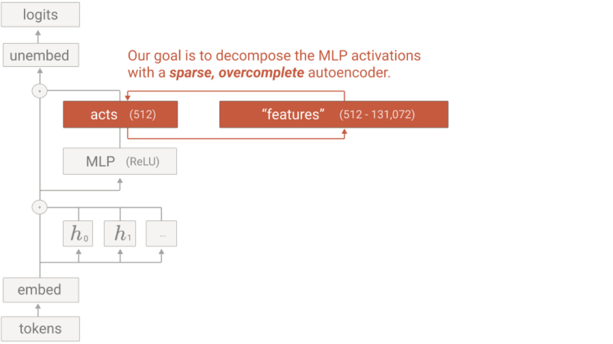
Crucially, we decompose into more features than there are neurons. This is because we believe that the MLP layer likely uses superposition [2, 3, 4, 5] to represent more features than it has neurons (and correspondingly do more useful non-linear work!). In fact, in our largest experiments we'll expand to have 256 times more features than neurons, although we'll primarily focus on a more modest 8× expansion.
| Transformer | Sparse Autoencoder | |
|---|---|---|
| Layers | 1 Attention Block 1 MLP Block(ReLU) |
1 ReLU(up) 1 Linear(down) |
| MLP Size | 512 | 512(1×) –131,072(256×) |
| Dataset | The Pile (100 billion tokens) [19] |
Transformer MLP Activations (8 billion samples) |
| Loss | Autoregressive Log-Likelihood | L2 reconstruction + L1 on hidden layer activation |
In the following subsections, we will motivate this setup at more length. Additionally, a more detailed discussion of the architectural details and training of these models can be found in the appendix.
Features as a Decomposition
There is significant empirical evidence suggesting that neural networks have interpretable linear directions in activation space. This includes classic work by Mikolov et al. [20] investigating "vector arithmetic" in word embeddings (but see [21] ) and similar results in other latent spaces (e.g. [22] ). There is also a large body of work investigating interpretable neurons, which are just basis dimensions (e.g. in RNNs [23, 24] ; in CNNs [25, 26, 27] ; in GANs [28] ; but see [29, 30] ). A longer review and discussion of this work can be found in the Motivation section of Toy Models [5] , although it doesn't cover more recent work (e.g. [31, 32, 33] ).2
If linear directions are interpretable, it's natural to think there's some "basic set" of meaningful directions which more complex directions can be created from. We call these directions features, and they're what we'd like to decompose models into. Sometimes, by happy circumstances, individual neurons appear to be these basic interpretable units (see examples above). But quite often, this isn't the case.
Instead, we decompose the activation vector xj as a combination of more general features which can be any direction:
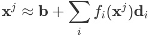
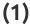
where xj is the activation vector of length d MLP for datapoint , j fi ( x j ) is the activation of feature , i each d i is a unit vector in activation space we call the direction of feature , i and b is a bias.3 Note that this decomposition is not new: it is just a linear matrix factorization of the kind commonly employed in dictionary learning.
In our sparse autoencoder setup, the feature activations are the output of the encoder
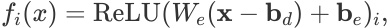
where We is the weight matrix of the encoder and b d , b e are a pre-encoder and an encoder bias. The feature directions are the columns of the decoder weight matrix Wd . (See appendix for full notation.)
If such a sparse decomposition exists, it raises an important question: are models in some fundamental sense composed of features or are features just a convenient post-hoc description? In this paper, we take an agnostic position, though our results on feature universality suggest that features have some existence beyond individual models.
SUPERPOSITION HYPOTHESIS
To see how this decomposition relates to superposition, recall that the superposition hypothesis postulates that neural networks “want to represent more features than they have neurons”. We think this happens via a kind of “noisy simulation”, where small neural networks exploit feature sparsity and properties of high-dimensional spaces to approximately simulate much larger much sparser neural networks [5] .
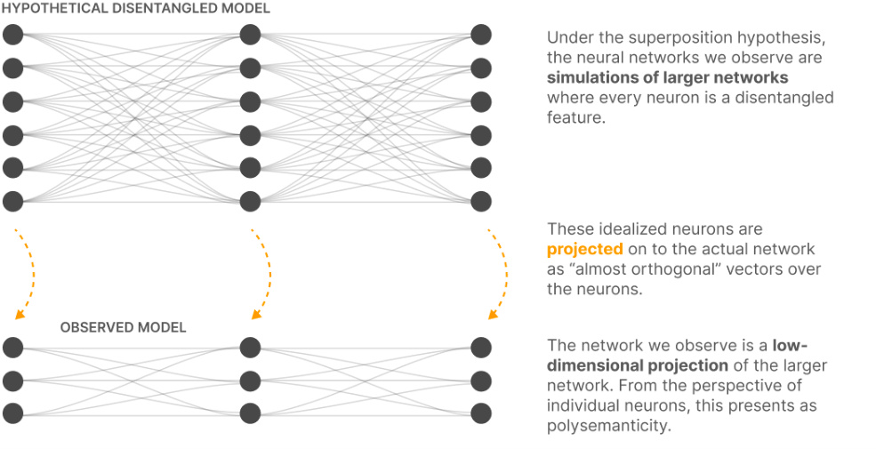
A consequence of this is that we should expect the feature directions to form an overcomplete basis. That is, our decomposition should have more directions d i than neurons. Moreover, the feature activations should be sparse, because sparsity is what enables this kind of noisy simulation. This is mathematically identical to the classic problem of dictionary learning.
What makes a good decomposition?
Suppose that a dictionary exists such that the MLP activation of each datapoint is in fact well approximated by a sparse weighted sum of features as in equation 1. That decomposition will be useful for interpreting the neural network if:
-
We can interpret the conditions under which each feature is active. That is, we have a description of which datapoints j cause the feature to activate (i.e. for which fi ( x j ) is large) that makes sense on a diverse dataset (including potentially synthetic or off-distribution examples meant to test the hypothesis).4
-
We can interpret the downstream effects of each feature, i.e. the effect of changing the value of fi on subsequent layers. This should be consistent with the interpretation in (1).
-
The features explain a significant portion of the functionality of the MLP layer (as measured by the loss; see How much of the model does our interpretation explain?).
A feature decomposition satisfying these criteria would allow us to:
-
Determine the contribution of a feature to the layer’s output, and the next layer’s activations, on a specific example.
-
Monitor the network for the activation of a specific feature (see e.g. speculation about safety-relevant features).
-
Change the behavior of the network in predictable ways by changing the values of some features. In multilayer models this could look like predictably influencing one layer by changing the feature activations in an earlier layer.
-
Demonstrate that the network has learned certain properties of the data.
-
Demonstrate that the network is using a given property of the data in producing its output on a specific example.5
-
Design inputs meant to activate a given feature and elicit certain outputs.
Of course, decomposing models into components is just the beginning of the work of mechanistic interpretability! It provides a foothold on the inner workings of models, allowing us to start in earnest on the task of unraveling circuits and building a larger-scale understanding of models.
Why not use architectural approaches?
In Toy Models of Superposition [5] , we highlighted several different approaches to solving superposition. One of those approaches was to engineer models to simply not have superposition in the first place.
Initially, we thought that this might be possible but come with a large performance hit (i.e. produce models with greater loss). Even if this performance hit had been too large to use in practice for real models, we felt that success at creating monosemantic models would have been very useful for research, and in a lot of ways this felt like the "cleanest" approach for downstream analysis.
Unfortunately, having spent a significant amount of time investigating this approach, we have ultimately concluded that it is more fundamentally non-viable.
In particular, we made several attempts to induce activation sparsity during training to produce models without superposition, even to the point of training models with 1-hot activations. This indeed eliminates superposition, but it fails to result in cleanly-interpretable neurons! Specifically, we found that individual neurons can be polysemantic even in the absence of superposition. This is because in many cases models achieve lower loss by representing multiple features ambiguously (in a polysemantic neuron) than by representing a single feature unambiguously and ignoring the others.
To understand this, consider a toy model with a single neuron trained on a dataset with four mutually-exclusive features (A/B/C/D), each of which makes a distinct (correct) prediction for the next token, labeled in the same fashion. Further suppose that this neuron’s output is binary: it either fires or it doesn’t. When it fires, it produces an output vector representing the probabilities of the different possible next tokens.
We can calculate the cross-entropy loss achieved by this model in a few cases:
- Suppose the neuron only fires on feature A, and correctly predicts token A when it does. The model ignores all of the other features, predicting a uniform distribution over tokens B/C/D when feature A is 3
not present. In this case the loss is 4 ln 3 ≈ 0.8 .
- Instead suppose that the neuron fires on both features A and B, predicting a uniform distribution over the A and B tokens. When the A and B features are not present, the model predicts a uniform distribution over the C and D tokens. In this case the loss is ln 2 ≈0.7 .
Because the loss is lower in case (2) than in case (1), the model achieves better performance by making its sole neuron polysemantic, even though there is no superposition.
This example might initially seem uninteresting because it only involves one neuron, but it actually points at a general issue with highly sparse networks. If we push activation sparsity to its limit, only a single neuron will activate at a time. We can now consider that single neuron and the cases where it fires. As seen earlier, it can still be advantageous for that neuron to be polysemantic.
Based on this reasoning, and the results of our experiments, we believe that models trained on cross-entropy loss will generally prefer to represent more features polysemantically than to represent fewer "true features" monosemantically, even in cases where sparsity constraints make superposition impossible.
Models trained on other loss functions do not necessarily suffer this problem. For instance, models trained under mean squared error loss (MSE) may achieve the same loss for both polysemantic and monosemantic representations (e.g. [35] ), and for some feature importance curves they may actively prefer the monosemantic solution [36] . But language models are not trained with MSE, and so we do not believe architectural changes can be used to create fully monosemantic language models.
Note, however, that in learning to decompose models post-training we do use an MSE loss (between the activations and their representation in terms of the dictionary), so sparsity can inhibit superposition from forming in the learned dictionary. (Otherwise, we might have superposition "all the way down.")
Using Sparse Autoencoders To Find Good Decompositions
There is a long-standing hypothesis that many natural latent variables in the world are sparse (see [37] , section "Why Sparseness?"). Although we have a limited understanding of the features that exist in language models, the examples we do have (e.g. [38] ) are suggestive of highly sparse variables. Our work on Toy Models of Superposition [5] shows that a large set of sparse features could be represented in terms of directions in a lower dimensional space.
For this reason, we seek a decomposition which is sparse and overcomplete. This is essentially the problem of sparse dictionary learning [39, 37] . (Note that, since we're only asking for a sparse decomposition of the activations, we make no use of the downstream effects of d i on the model's output. This means we'll be able to use those downstream effects in later sections as a kind of validation on the features found.)
It's important to understand why making the problem overcomplete – which might initially sound like a trivial change – actually makes this setting very different from similar approaches seeking sparse disentanglement in the literature. It's closely connected to why dictionary learning is such a non-trivial operation; in fact, as we'll see, it's actually kind of miraculous that this is possible at all. At the heart of dictionary learning is an inner problem of computing the feature activations fi ( x ) for each datapoint , x given the feature directions d i . On its surface, this problem may seem impossible: we're asking to determine a high-dimensional vector from a lowdimensional projection. Put another way, we're trying to invert a very rectangular matrix. The only thing which makes it possible is that we are looking for a high-dimensional vector that is sparse! This is the famous and wellstudied problem of compressed sensing, which is NP-hard in its exact form. It is possible to store highdimensional sparse structure in lower-dimensional spaces, but recovering it is hard.
Despite its difficulty, there are a host of sophisticated methods for dictionary learning (e.g. [40, 41] ). These methods typically involve optimizing a relaxed problem or doing a greedy search. We tried several of these classic methods, but ultimately decided to focus on a simpler sparse autoencoder approximation of dictionary learning (similar to Sharkey, et al. [11] ). This was for two reasons. First, a sparse autoencoder can readily scale to very large datasets, which we believe is necessary to characterize the features present in a model trained on a large and diverse corpus.6 Secondly, we have a concern that iterative dictionary learning methods might be "too strong", in the sense of being able to recover features from the activations which the model itself cannot access. Exact compressed sensing is NP-hard, which the neural network certainly isn't doing. By contrast, a sparse autoencoder is very similar in architecture to the MLP layers in language models, and so should be similarly powerful in its ability to recover features from superposition.
Sparse Autoencoder Setup
We briefly overview the architecture and training of our sparse autoencoder here, and provide further details in Basic Autoencoder Training. Our sparse autoencoder is a model with a bias at the input, a linear layer with bias and ReLU for the encoder, and then another linear layer and bias for the decoder. In toy models we found that the bias terms were quite important to the autoencoder’s performance.7
We train this autoencoder using the Adam optimizer to reconstruct the MLP activations of our transformer model, with an MSE8 loss plus an L1 penalty to encourage sparsity.
In training the autoencoder, we found a couple of principles to be quite important. First, scale really matters. We found that training the autoencoder on more data made features subjectively “sharper” and more interpretable. In the end, we decided to use 8 billion training points for the autoencoder (see Autoencoder Dataset).
Second, we found that over the course of training some neurons cease to activate, even across a large number of datapoints. We found that “resampling” these dead neurons during training gave better results by allowing the model to represent more features for a given autoencoder hidden layer dimension. Our resampling procedure is detailed in Neuron Resampling, but in brief we periodically check for neurons which have not fired in a significant number of steps and reset the encoder weights on the dead neurons to match data points that the autoencoder does not currently represent well.
For readers looking to apply this approach, we supply an appendix with Advice for Training Sparse Autoencoders.
HOW CAN WE TELL IF THE AUTOENCODER IS WORKING?
Usually in machine learning we can quite easily tell if a method is working by looking at an easily-measured quantity like the test loss. We spent quite some time searching for an equivalent metric to guide our efforts
here, and unfortunately have yet to find anything satisfactory.
We began by looking for an information-based metric, so that we could say in some sense that the best factorization is the one that minimizes the total information of the autoencoder and the data. Unfortunately, this total information did not generally correlate with subjective feature interpretability or activation sparsity. (Runs whose feature activations had an average L0 norm in the hundreds but low reconstruction error could have lower total information than those with smaller average L0 norm and higher reconstruction error.)
Thus we ended up using a combination of several additional metrics to guide our investigations:
-
Manual inspection: Do the features seem interpretable?
-
Feature density: we found that the number of “live” features and the percentage of tokens on which they fire to be an extremely useful guide. (See appendix for details.)
-
Reconstruction loss: How well does the autoencoder reconstruct the MLP activations? Our goal is ultimately to explain the function of the MLP layer, so the MSE loss should be low.
-
Toy models: Having toy models where we know the ground truth and so can cleanly evaluate the autoencoder’s performance was crucial to our early progress.
Interpreting or measuring some of these signals can be difficult, though. For instance, at various points we thought we saw features which at first didn’t make any sense, but with deeper inspection we could understand. Likewise, while we have identified some desiderata for the distribution of feature densities, there is much that we still do not understand and which prevents this from providing a clear signal of progress.
We think it would be very helpful if we could identify better metrics for dictionary learning solutions from sparse autoencoders trained on transformers.
The (one-layer) model we're studying
We chose to study a one-layer transformer model. We view this model as a testbed for dictionary learning, and in that role it brings three key advantages:
-
Because one-layer models are small they likely have fewer "true features" than larger models, meaning features learned by smaller dictionaries might cover all their "true features". Smaller dictionaries are cheaper to train, allowing for fast hyperparameter optimization and experimentation.
-
We can highly overtrain a one-layer transformer quite cheaply. We hypothesize that a very high number of training tokens may allow our model to learn cleaner representations in superposition.
-
We can easily analyze the effects features have on the logit outputs, because these are approximately linear in the feature activations.9 This provides helpful corroboration that the features we have found are not just telling us about the data distribution, and actually reflect the functionality of the model.
We trained two one-layer transformers with the same hyperparameters and datasets, differing only in the random seed used for initialization. We then learned dictionaries of many different sizes on both transformers, using the same hyperparameters for each matched pair of dictionaries but training on the activations of different tokens for each transformer.
We refer to the main transformer we study in this paper as the “A” transformer. We primarily use the other transformer (“B”) to study feature universality, as we can e.g. compare features learned from the “A” and “B” transformers and see how similar they are.
Notation for Features
Throughout this draft, we'll use strings like "A/1/2357" to denote features. The first portion "A" or "B" denote which model the features come from. The second part (e.g. the "1" in "A/1") denotes the dictionary learning run. These vary in the number of learned factors and the L1 coefficient used. A table of all of our runs is available here. Notably, A/0…A/5 form a sequence with fixed L1 coefficients and increasing dictionary sizes. The final portion (e.g. the "2357" in "A/1/2357") corresponds to the specific feature in the run.
Sometimes, we want to denote neurons from the transformer rather than features learned by the sparse autoencoder. In this case, we use the notation "A/neurons/32".
Interface for Exploring Features
We provide an interface for exploring all the features in all our dictionary learning runs. Links to the visualizations for each run can be found here. We suggest beginning with the interface for A/1, which we discuss the most.
These interfaces provide extensive information on each feature. This includes examples of when they activate, what effect they have on the logits when they do, examples of how they affect the probability of tokens if the feature is ablated, and much more:
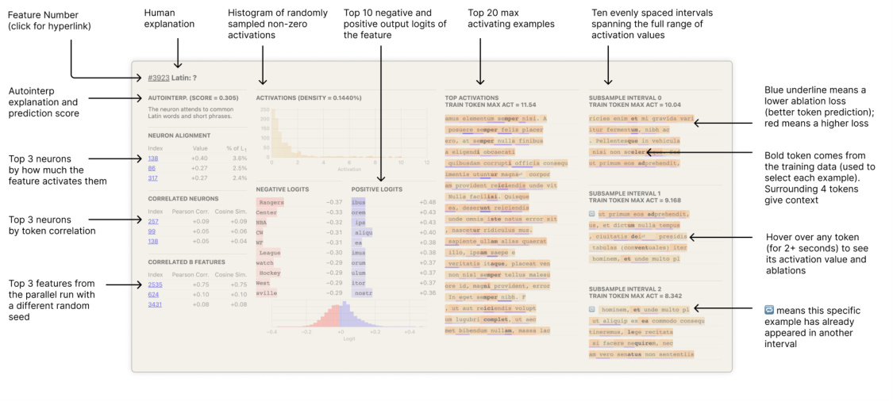
Our interface also allows users to search through features:
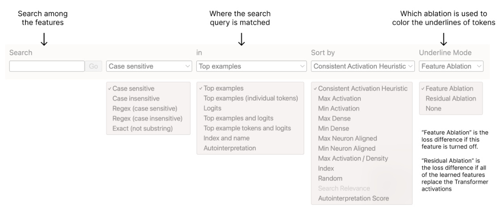
Additionally, we provide a second interface displaying all features active on a given dataset example. This is available for a set of example texts.
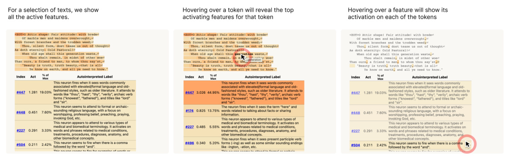
Detailed Investigations of Individual Features
The most important claim of our paper is that dictionary learning can extract features that are significantly more monosemantic than neurons. In this section, we give a detailed demonstration of this claim for a small number of features which activate in highly specific contexts.
The features we study respond to
-
Text written in Arabic script (like " والمقابلة الجبر حساب في المختصر الكتاب ")
-
DNA sequences (like "CCTGGTACTGTACGAACGAACGAACGTAGCCTTGG")
-
base64 strings (like the final characters in "https://www.youtube.com/watch?v=dQw4w9WgXcQ")
-
Text written in Hebrew script (like "הארץ ואת השמים את אלהים ברא בראשית")
For each learned feature, we attempt to establish the following claims:
-
The learned feature activates with high specificity for the hypothesized context. (When the feature is on the context is usually present.)
-
The learned feature activates with high sensitivity for the hypothesized context. (When the context is present, the feature is usually on.)
-
The learned feature causes appropriate downstream behavior.
-
The learned feature does not correspond to any neuron.
-
The learned feature is universal – a similar feature is found by dictionary learning applied to a different model.
To demonstrate claims 1–3, we devise computational proxies for each context, numerical scores estimating the (log-)likelihood that a string (or token) is from the specific context. The contexts chosen above are easy to model based on the defined sets of unicode characters involved. We model DNA sequences as random strings of characters from [ATCG] and we model base64 strings as random sequences of characters from [a-zA-Z0-9+/] . For Arabic script and Hebrew features, we exploit the fact that each language is written in a script consisting of well-defined Unicode blocks. Each computational proxy is then an estimate of the loglikelihood ratio of a string under the hypothesis versus under the full empirical distribution of the dataset. The full description of how we estimate log( P ( s ∣context)/ P ( s )) for each feature hypothesis is given in the appendix section on proxies.
In this section we primarily study the learned feature which is most active in each context. There are typically other features that also model that context, and we find that rare “gaps” in the sensitivity of a main feature are often explained by the activity of another. We discuss this phenomenon in detail in sections on Activation Sensitivity and Feature Splitting.
We take pains to demonstrate the specificity of each feature, as we believe that to be more important for ruling out polysemanticity. Polysemanticity typically involves neurons activating for clearly unrelated concepts. 10 If our proxy shows that a feature only activates in some relatively rare and specific context, that would exclude the typical form of polysemanticity.
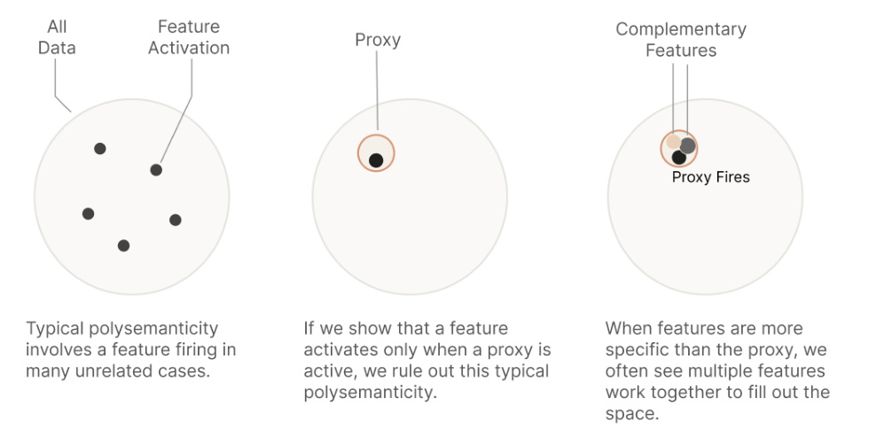
We finally note that the features in this section are cherry-picked to be easier to analyze. Defining simple computational proxies for most features we find, such as text concerning fantasy games, would be difficult, and we analyze them in other ways in the following section.
Arabic Script Feature
The first feature we'll consider is an Arabic Script feature, A/1/3450. It activates in response to text in Arabic, Farsi, Urdu (and possibly other languages), which use the Arabic script. This feature is quite specific and relatively sensitive to Arabic script, and effectively invisible if we view the model in terms of individual neurons.
ACTIVATION SPECIFICITY
Our first step is to show that this feature fires almost exclusively on text in Arabic script. We give each token an "Arabic script" score using an estimated likelihood ratio log( P ( s ∣Arabic Script)/ P ( s )) , and break down the histogram of feature activations by that score. Arabic text is quite rare in our overall data distribution – just 0.13% of training tokens — but it makes up 81% of the tokens on which our feature is active. That percentage varies significantly by feature activity level, from 25% when the feature is barely active to 98% when the feature activation is above 5.
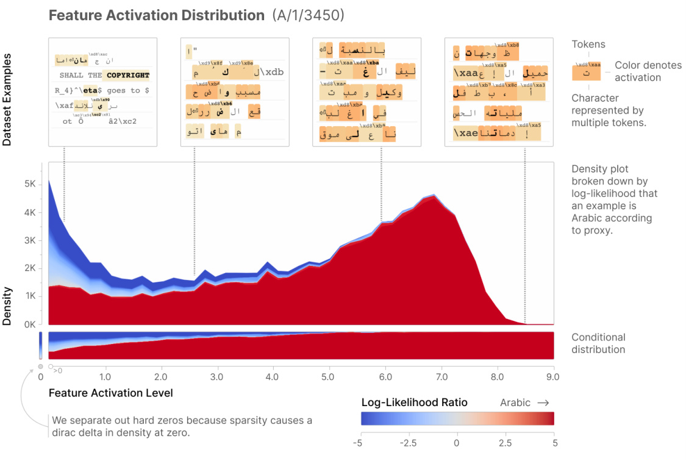
We also show dataset examples demonstrating different levels of feature activity. In interpreting them, it's important to note that Arabic Unicode characters are often split into multiple tokens. For example, the character ث (U+062B) is tokenized as \xd8 followed by \xab .11 When this happens, A/1/3450 typically only fires on the last token of the Unicode character.
The upper parts of the activation spectrum, above an activity of ~5, clearly respond with high specificity to Arabic script. What should we make of the lower portions? We have three hypotheses:
-
The proxy is imperfect. It has false negatives due to common characters which are in other Unicode blocks (e.g., whitespace, punctuation), and also due to places where tokenization has created strange behavior.12
-
The model may be imperfect (but still calibrated). If features activate proportional to their
-
"confidence" that some property is present, then we should expect them to sometimes be wrong in their weak activations. Although it might seem silly to fail to recognize which language a piece of text is, this is a very weak one layer transformer model, and the fact that characters are often split into multiple tokens adds additional difficulty.
The autoencoder may be imperfect: If the width of our autoencoder is less than the number of "true features" being used by the model, then unrecovered features may show up as low activations across many of our learned features.
Regardless, large feature activations have larger impacts on model predictions,13 so getting their interpretation right matters most. One useful tool for assessing the impact of false positives at low activation levels is the "expected value plot" of Cammarata et al. [25] . We plot the distribution of feature activations weighted by activation level. Most of the magnitude of activation provided by this feature comes from dataset examples which are in Arabic script.
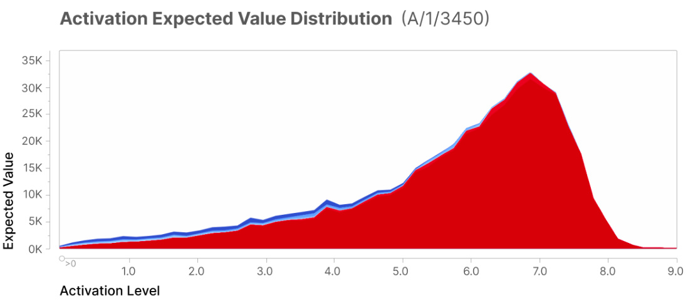
ACTIVATION SENSITIVITY
In the Feature Activation Distribution above, it's clear that A/1/3450 is not sensitive to all tokens in Arabic script. In the random dataset examples, it fails to fire on five examples of the prefix " ال ", transliterated as "al-", which is the equivalent of the definite article "the" in English. However, in exactly those places, another feature which is specific to Arabic script, A/1/3134, fires. There are several additional features that fire on Arabic and related scripts (e.g. A/1/1466, A/1/3134, A/1/3399) which contribute to representing Arabic script. Another example deals with Unicode tokenization: when Arabic characters are split into multiple tokens, the feature we analyze here only activates at the final token comprising the character, while A/1/3399 activates on the first token comprising the character. To see how these features collaborate, we provide an alternative visualization showing all the features active on a snippet of Arabic text. We consider such interactions more in the Phenomenology section below.
Nevertheless, we find a Pearson correlation of 0.74 between the activity of our feature and the activity of the Arabic script proxy (thresholded at 0), over a dataset of 40 million tokens. Correlation provides a joint measure of sensitivity and specificity that takes magnitude into account, and 0.74 is a substantial correlation.
FEATURE DOWNSTREAM EFFECTS
Because the autoencoder is trained on model activations, the features it learns could in theory represent structure in the training data alone, without any relevance to the network’s function. We show instead that the learned features have interpretable causal effects on model outputs which make sense in light of the features’ activations. Note that these downstream effects are not inputs to the dictionary learning process, which only sees the activations of the MLP layer. If the resulting features also mediate important downstream behavioral effects then we can be confident that the feature is truly connected to the MLP’s functional role in the network and not just a property of the underlying data.
We begin with a linear approximation to the effect of each feature on the model logits. We compute the logit weight following the path expansion approach of [18] ,14 multiplying each feature direction by the MLP output weights, an approximation of the layer norm operation combining a projection to remove the mean and a diagonal matrix approximating the scaling terms, and the unembedding matrix ( diWdownπLWunembed ). Because the softmax function is shift-invariant there is no absolute scale for the logit weights; we shift these so that the median logit weight for each feature is zero.
Each feature, when active, makes some output tokens more likely and some output tokens less likely. We plot that distribution of logit weights.15 There is a large primary mode at zero, and a second much smaller mode on the far right, the tokens whose likelihood most increases when our feature is on. This second mode appears to correspond to Arabic characters, and tokens which help represent Arabic script characters (especially \xd8 and \xd9 , which are often the first half of the UTF-8 encodings of Arabic Unicode characters in the basic Arabic Unicode block).
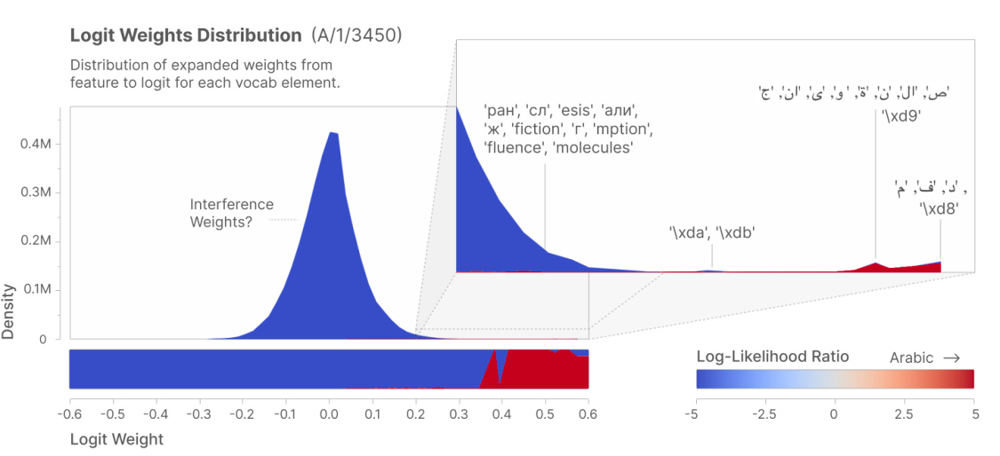
This suggests that activating this feature increases the probability the network predicts Arabic script tokens.
To visualize these effects on actual data, we causally ablate the feature. For a given dataset example, we run the context through the model until the MLP layer, decode the activations into features, then subtract off the activation of A/1/3450, artificially setting it to zero on the whole context, before applying the rest of the model. We visualize the effect of ablating the feature using underlines in the visualization; tokens whose predictions were helped by the feature (ablation decreased likelihood) are underlined in blue and tokens whose predictions were hurt by the feature (ablation increased likelihood) are underlined in red.
In the example on the right below we see that the A/1/3450 was active on every token in a short context (orange background). Ablating it hurt the predictions of all the tokens in Arabic script (purple underlines), but helped the prediction of the period . (orange underline). The rest of the figure displays contexts from two different ranges of feature activation levels. (The feature activation on the middle token of examples on the right ("subsample interval 5") is about half that of the middle token of examples on the left ("subsample interval 0")). We see that the feature was causally helping the model predictions on Arabic script through that full range, and the only tokens made less likely by the feature are punctuation shared with other scripts. The magnitudes of the impact are larger when the feature is more active.
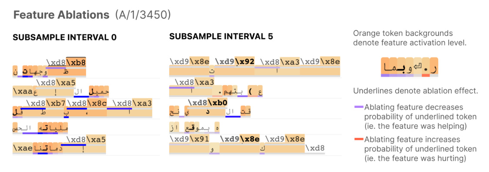
We encourage interested readers to view the feature visualization for A/1 to review this and other effects.
We also validate that the feature's downstream effect is in line with our interpretation as an Arabic script feature by sampling from the model with the feature activity "pinned" at a high value. To do this, we start with a prefix 1,2,3,4,5,6,7,8,9,10 where the model has an expected continuation (keep in mind that this is a one layer model that is very weak!). We then instead set A/1/3450 to its maximum observed value and see how that changes the samples:
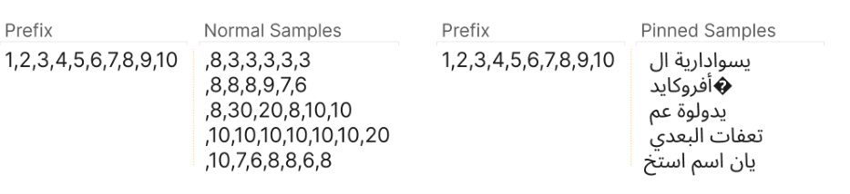
THE FEATURE IS NOT A NEURON
This feature seems rather monosemantic, but some models have relatively monosemantic neurons, and we want to check that dictionary learning didn't merely hand us a particularly nice neuron.17 We first note that when we search for neurons with Arabic script in their top dataset 20 examples, only one neuron turns up, with a single example in Arabic script. (Eighteen of the remaining examples are in English, and one is in Cyrillic.)
We then look at the coefficients of the feature in the neuron basis, and find that the three largest coefficients by magnitude are all negative (!) and there are a full 27 neurons whose coefficients are at least 0.1 in magnitude.
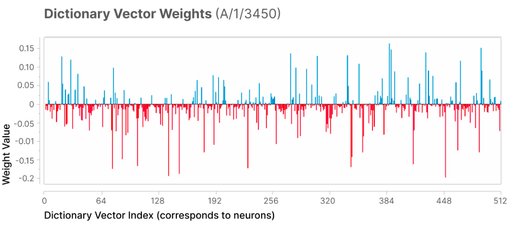
It is of course possible that these neurons engage in a delicate game of cancellation, resulting in one particular neuron's primary activations being sharpened. To check for this, we find the neuron whose activations are most correlated to the feature's activations over a set of ~40 million dataset examples. 18 The most correlated neuron (A/neurons/489) responds to a mixture of different non-English languages.19 We can see this by visualizing the activation distribution of the neuron – the dataset examples are all other languages, with Arabic script present only as a small sliver.
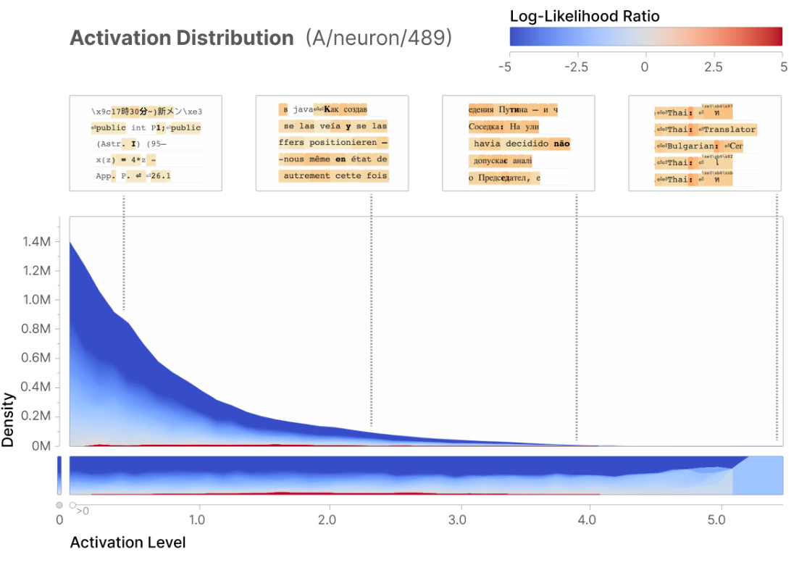
Logit weight analysis is also consistent with this neuron responding to a mixture of languages. For example, in the figure below many of the top logit weights appear to include Russian and Korean tokens. Careful readers will observe a thin red sliver corresponding to rare Arabic script tokens in the distribution. These Arabic script tokens have weight values that are very slightly positive leaning overall, but some are negative.
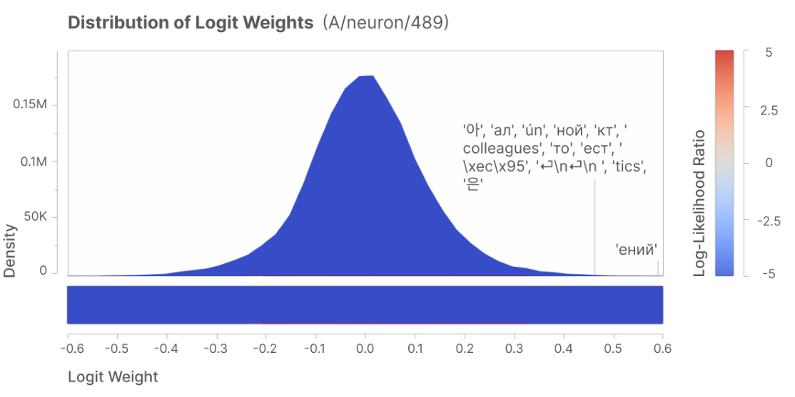
Finally, scatter plots and correlations suggest the similarities between A/1/3450 and the neuron are non-zero, but quite minimal.20 In particular, note how the y-axis of the logit weights scatter plot (corresponding to the feature) cleanly separates the Arabic script token logits, while the x-axis does not. More generally, note how the y-marginals both clearly exhibit specificity, but the x-marginals do not.
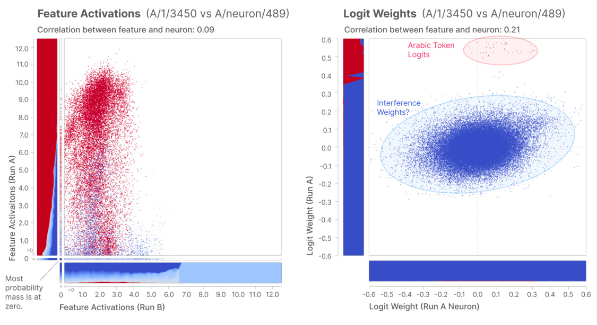
We conclude that the features we study do not trivially correspond to a single neuron. The Arabic script feature would be effectively invisible if we only analyzed the model in terms of neurons.
UNIVERSALITY
We will now ask whether A/1/3450 is a universal feature that forms in other models and can be consistently discovered by dictionary learning. This would indicate we are discovering something more general about how one-layer transformers learn representations of the dataset.
We search for a similar feature in B/1, a dictionary learning run on a transformer trained on the same dataset but with a different random seed. We search for the feature with the highest activation correlation21 and find B/1/1334 (corr=0.91), which is strikingly similar:
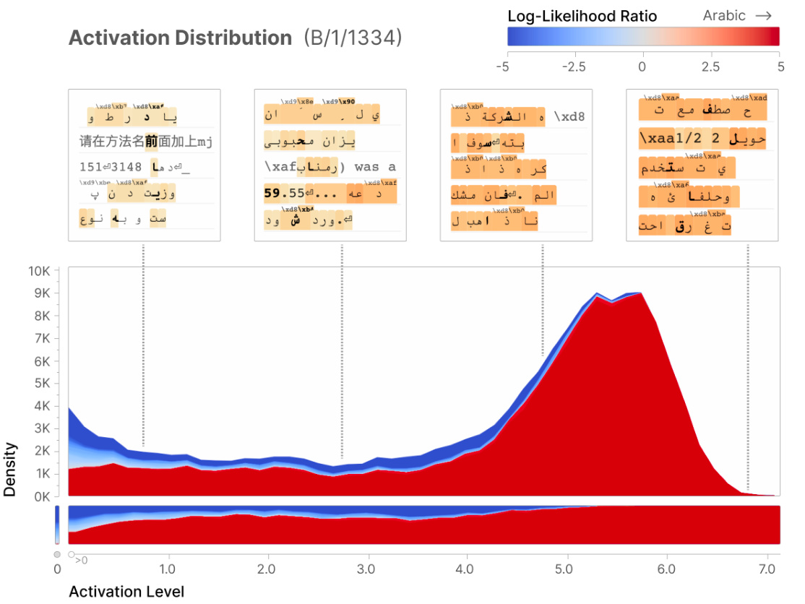
This feature clearly responds to Arabic script as well. If anything, it's nicer than our original feature – it's more specific in the 0–1 range. The logit weights tell a similar story:
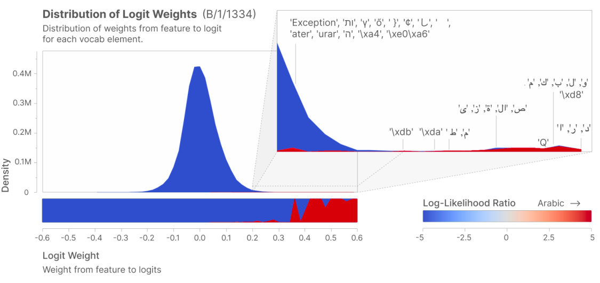
The effects of ablating this feature are also consistent with this (see the visualization for B/1/1334).
To more systematically analyze the similarities between A and B, we look at scatter plots comparing the activations or logit weights:
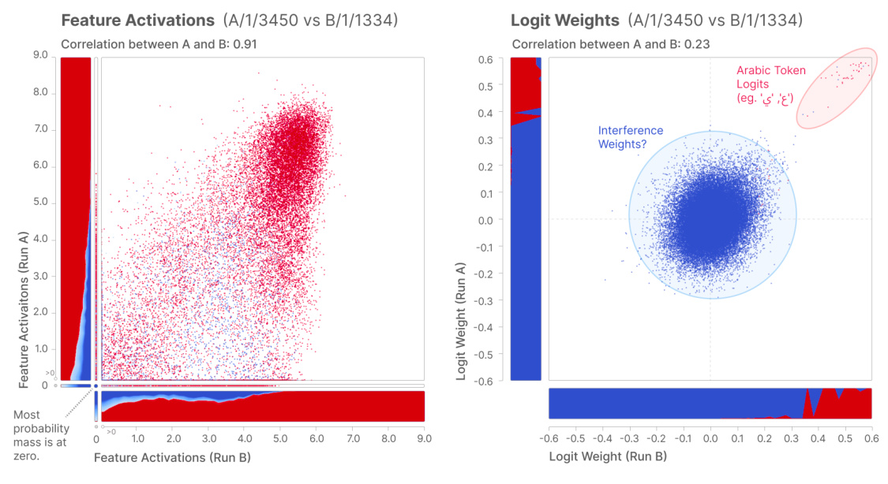
The activations are strongly correlated (Pearson correlation of 0.91), especially in the main Arabic mode.
The logit weights reveal a two-dimensional version of the bimodality we saw in the histogram for A/1, with logit weights for Arabic tokens clustering at the top right. The correlation is more modest than that of the activations because the distribution is dominated by a relatively uncorrelated mode in the center. We hypothesize this central mode corresponds to "weight interference" and that the shared outlier mode is the important observation – that is, the model may ideally prefer to have all those weights be zero, but due to superposition with other features and their weights, this isn't possible.
DNA Feature
We now consider a DNA feature, A/1/2937. It activates in response to long uppercase strings consisting of A , T , C , and G , typically used to represent nucleotide sequences. We closely follow the analysis of the Arabic script feature above to show activation specificity and sensitivity for the feature, sensible downstream effects, a lack of neuron alignment, and universality between models. The main differences will be that (1) A/1/2937 is the only feature devoted to modeling the DNA context, and (2) our proxy is less sensitive to DNA than our feature is, missing strings containing punctuation, spaces, and missing bases.
We begin with the computational proxy for "is a DNA sequence", log( P ( s ∣DNA)/ P ( s )) . Because there are some vocabulary tokens, such as CAT , which could occur in DNA but also occur in other contexts, we always look at groups of at least two tokens when evaluating the proxy. The log-probabilities turn out to be quite bimodal, so we binarize the proxy (based on its sign). This binarized proxy then has a Pearson correlation of 0.8 with the feature activations.
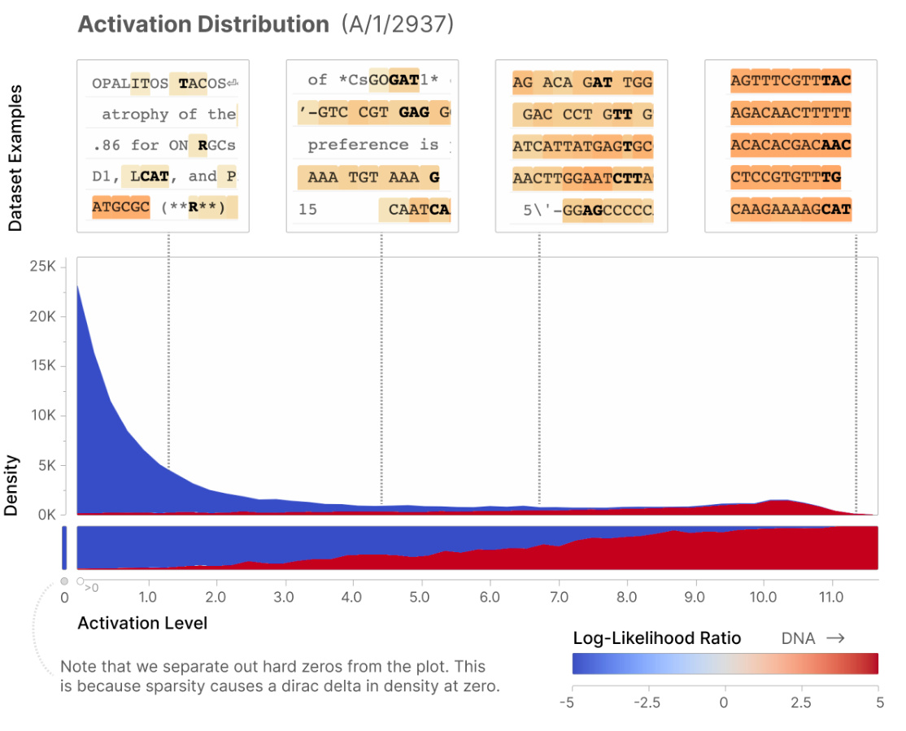
While the feature appears to be quite monosemantic in the feature's higher registers (all 10 random dataset examples above activation of 6.0 are DNA sequences), there is significant blue indicating the DNA proxy not firing in the lower registers. Below we show a grid of random examples at four activation levels (including feature off) where the proxy does and doesn't fire.
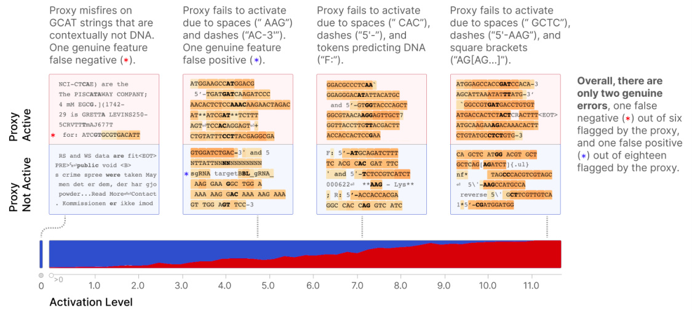
We note that in all but two cases where the feature and proxy disagree, the feature does indicate a DNA sequence, just one outside our proxy's strict ATCG vocabulary. For example, the space present in the triplets TGG AGT makes the proxy fail to fire. The feature also fires productively on '- in the string 5'-TCT , because what follows that prefix should be DNA, even though the prefix is not itself DNA. (The causal ablation reveals that turning off the DNA feature hurts the prediction of the strings that follow.) We thus believe that A/1/2937 is quite sensitive and specific for DNA. The case where the proxy fires and the feature does not is indeed a DNA sequence, though the feature begins firing on the very next token. We observe that the DNA feature may not fire on the first few tokens of a DNA sequence, but by the end of a long DNA sequence, it is the only feature active.
FEATURE DOWNSTREAM EFFECT
The downstream effect of the DNA feature being active, as measured by logit weights, make sense, with all the top tokens being combinations of nucleotides like AGT and GCC .
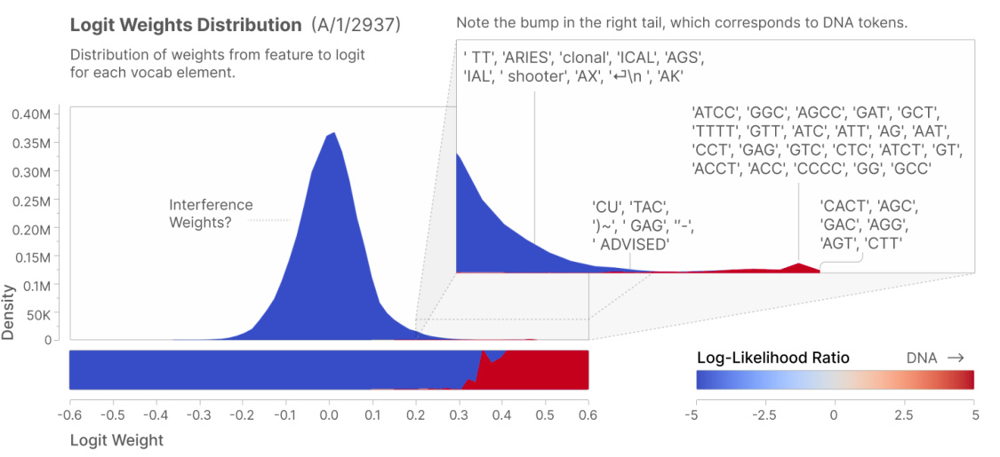
THE FEATURE IS NOT A NEURON
The most similar neuron to A/1/2937, as measured by activation correlation, is A/neurons/67. DNA contexts form a tiny sliver of that neuron's activating examples. The neuron whose coefficient is the highest in our feature's vector, A/neurons/227, also has no DNA sequences in its top activating examples.
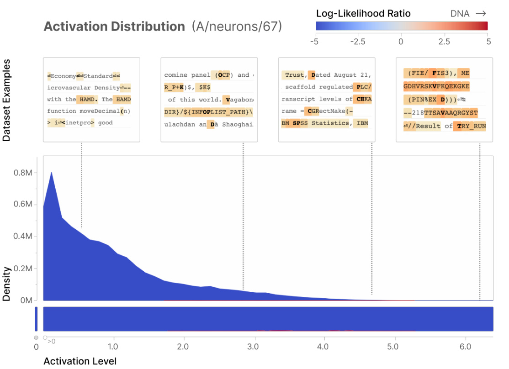
UNIVERSALITY
A/1/2937 has a correlated feature (corr=0.92) in run B/1, B/1/3680. Their top logit weights agree, and are DNA tokens (e.g. AGT ) forming a separate mode (circled on the right) than the bulk of the logit weights for both.
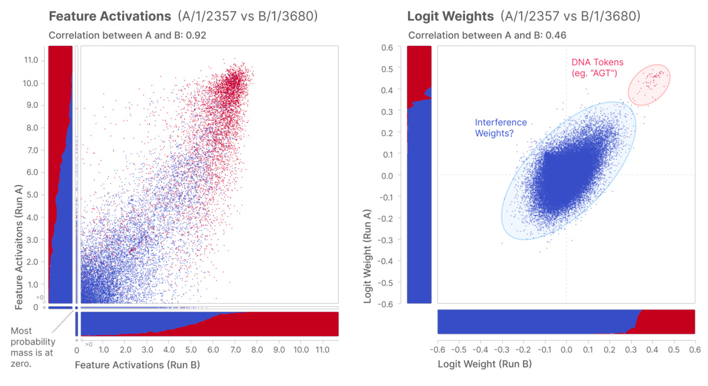
Base64 Feature
We now consider a base64 feature, A/1/2357. We're particularly excited by this feature because we discovered a base64 neuron in our SoLU paper [38] , suggesting that base64 might be quite universal – even across models trained on somewhat different datasets and with different architectures. We model base64 strings as random sequences of characters from [a-zA-Z0-9+/] . The activation distribution colored by the corresponding computational proxy, together with the random dataset examples from each activation level, shows that this feature is quite specific to base64.
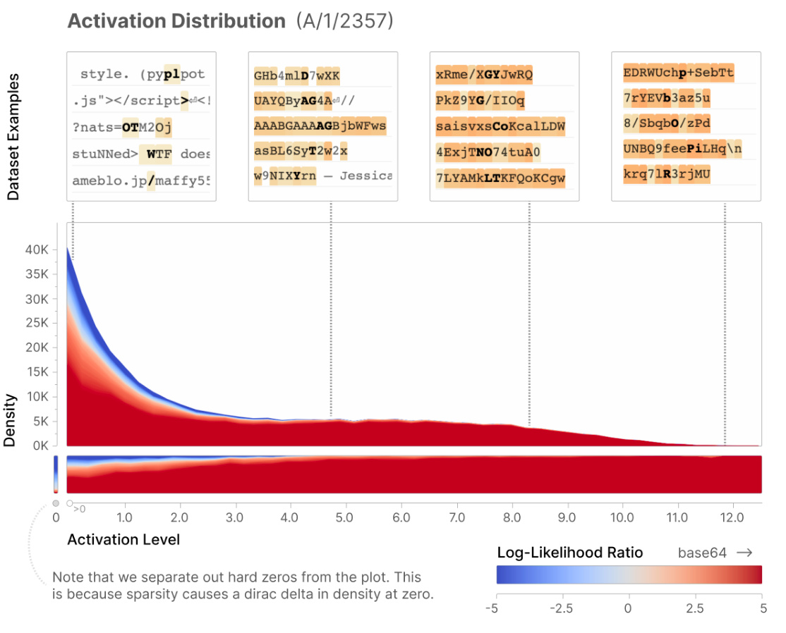
This is not the only feature active in base64 contexts, and in a section below we discuss the two others, one of which fires on single digits in base64 contexts (like the 2, 4, 7, and 9 on which A/1/2357 doesn't activate in the figure above), exploiting a property of the BPE tokenizer to make a better prediction.
Turning to the logit weights, they have a second mode consisting of highly base64-specific tokens. The main mode seems to primarily be interference, but the right side is skewed towards base64-neutral or slightly base64-leaning tokens. (If we look at the conditional below, we see a more continuous transition to base64-specific tokens.)
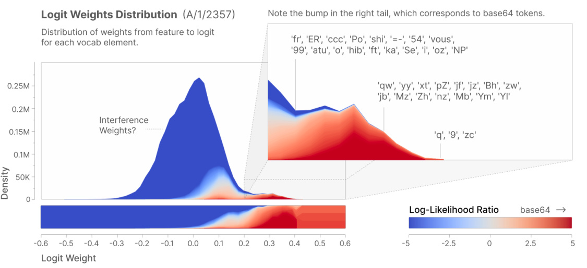
There is a more continuous transition between non-base64 and base64 tokens than we saw in the Arabic script example. This difference likely arises because whether a token occurs more in Arabic script than in other text is a relatively binary distinction, whereas whether a token occurs more in base64 or other text varies more continuously. For instance, fr is both a common abbreviation for the French language and also a base64 token, so it makes sense for the model to be cautious in up-weighting fr because it might already have a higher prior due to use in French. Indeed, any token consisting of letters from the English alphabet will have some nontrivial probability of appearing in base64 strings.
The Pearson correlation between the computational proxy and the activity of A/1/2357 is just 0.38. We believe that is mostly because the proxy is too broad. For example hexadecimal strings (those made of [0-9A-F] ) activate the proxy, as they are quite different from the overall data distribution, but are actually predicted by a feature of their own, A/1/3817.
UNIVERSALITY
A/1/2357 has a correlated feature (corr=0.85) in run B/1, B/1/2165. It also has high activation specificity for base64 strings:
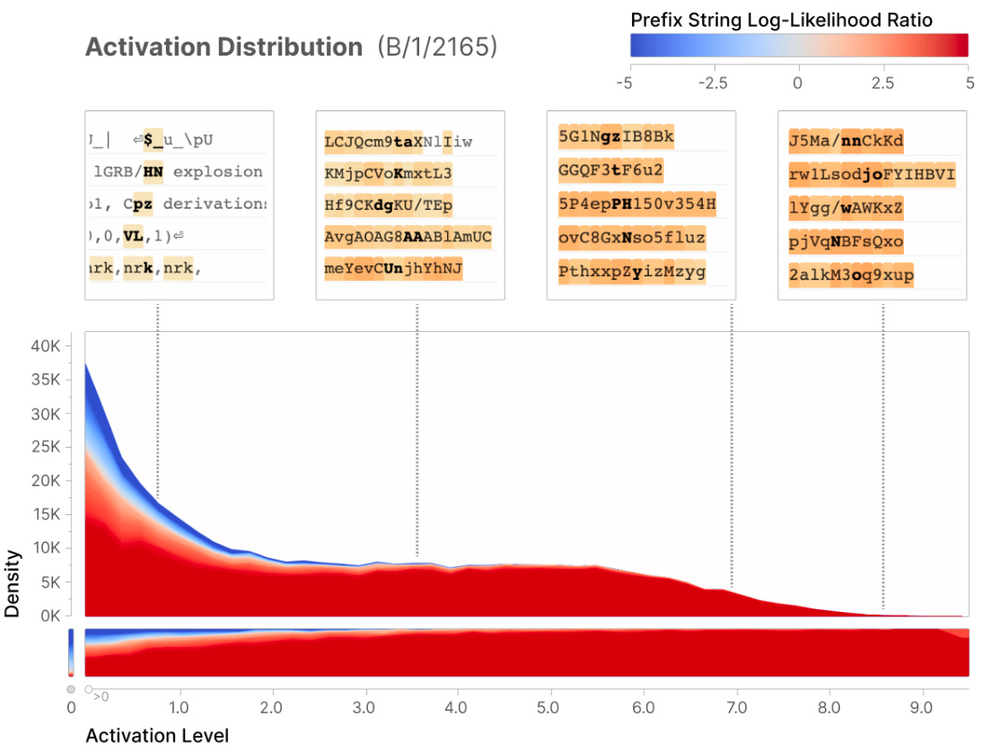
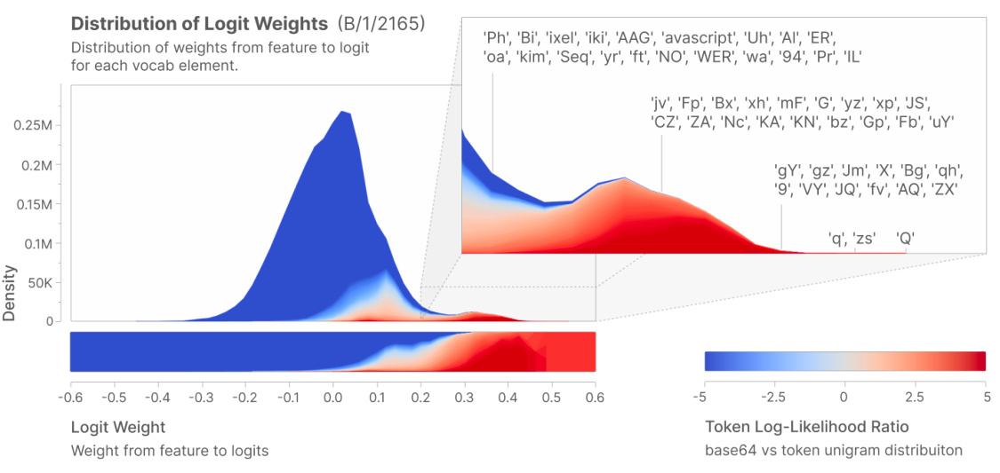
Correlations and scatter plots are also consistent with them being very similar features:
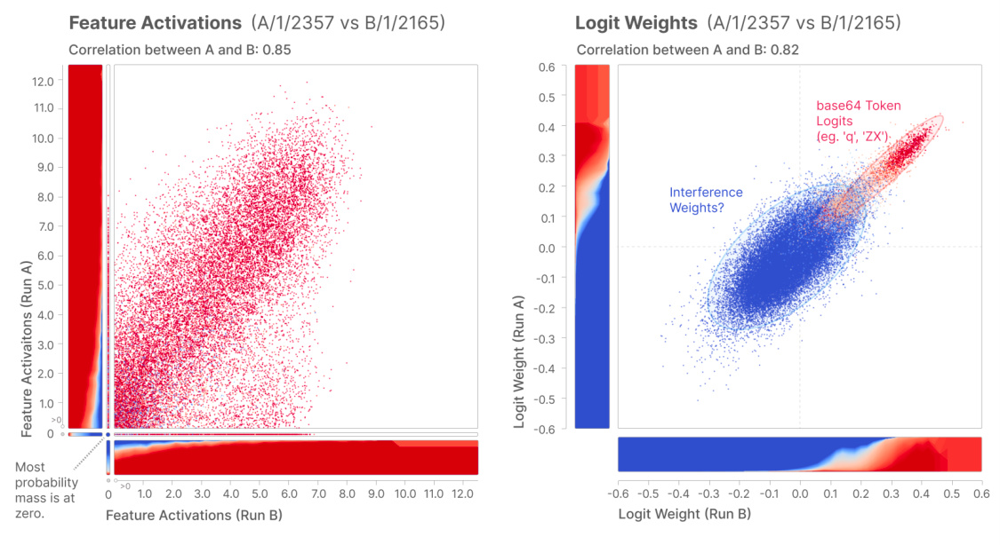
Note that we expect the overlap between the interference and base64 token logit weights to be from the aforementioned usage of base64 tokens across many other contexts.
THE FEATURE IS NOT A NEURON
Looking at the neuron in model A that most correlates with this feature: A/neurons/470 (corr=0.18), we find that while it does notably respond to base64 strings, it also activates for lots of other things, including code, HTML labels, parts of URLs, etc.:
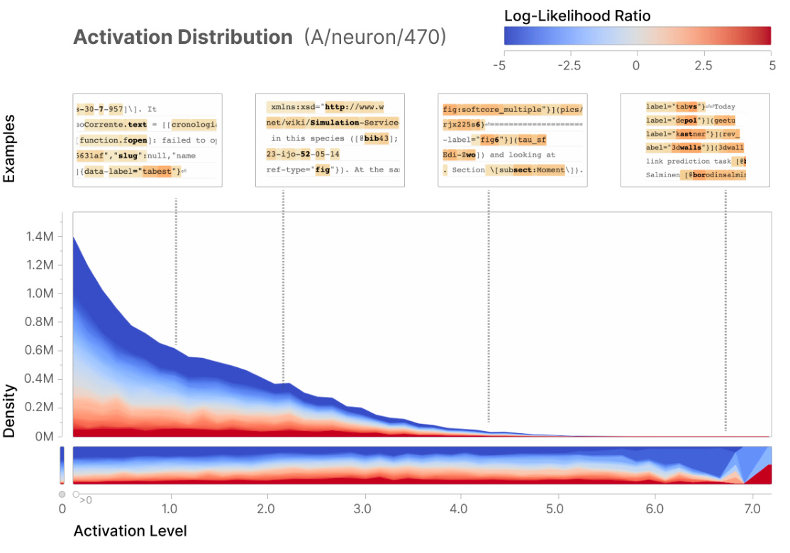
The logit weights suggest it somewhat increases base64 tokens, but is much more focused on upweighting other tokens, e.g. filename endings.
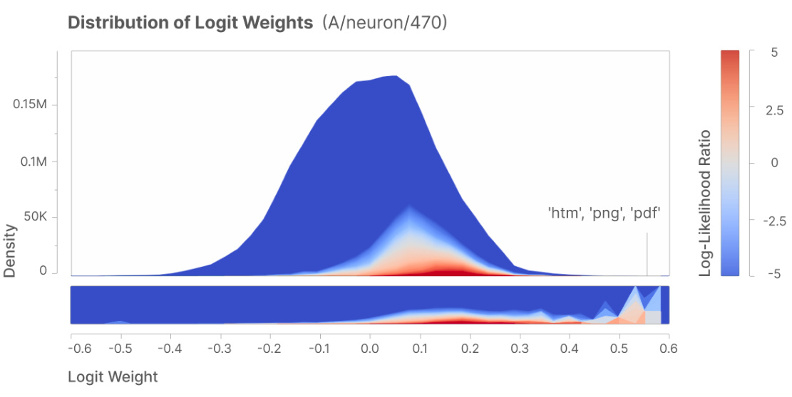
The activation and logit correlations are consistent with this neuron helping represent the same feature, but largely doing other things.
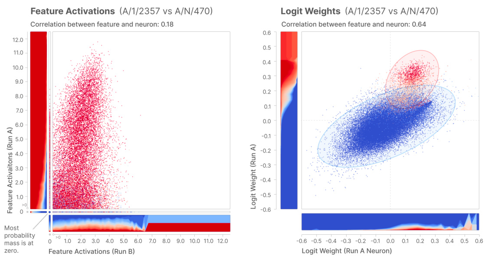
Hebrew Feature
Another interesting example is the Hebrew feature A/1/416. Like the Arabic feature, it's easy to computationally identify Hebrew text based on Unicode blocks.
A/1/416 has high activation specificity in the upper spectrum. It does weakly activate for other things (especially other languages with Unicode scripts). There is also some blue in strong activations; this appears to significantly be on "common characters", such as whitespace or punctuation, which are from other unicode blocks (see more discussion of similar issues in the Arabic feature section).
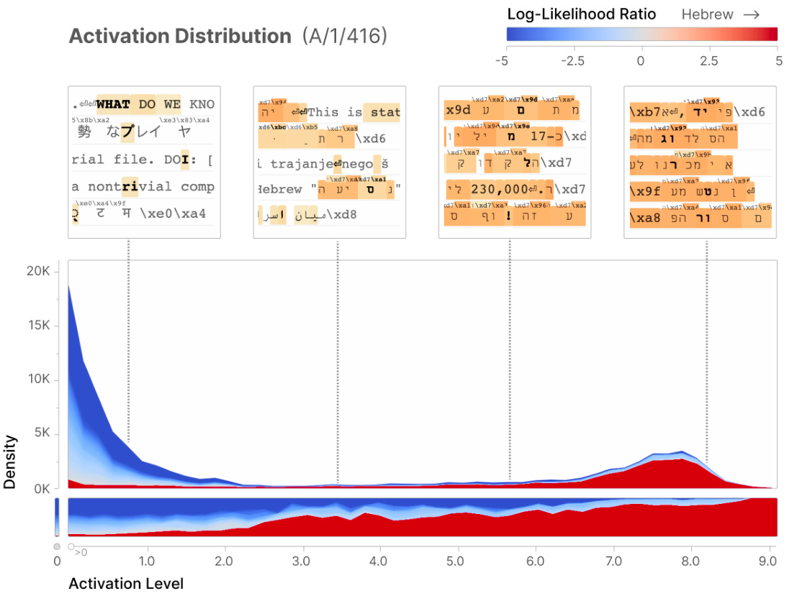
Its logit weights have a notable second mode, corresponding to Hebrew characters and relevant incomplete Unicode characters. Note that \xd7 is the first token in the UTF-8 encoding of most characters in the basic Hebrew Unicode block.
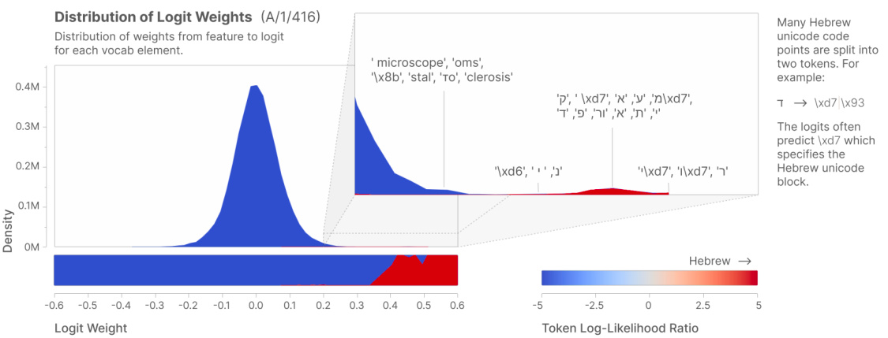
The Pearson correlation of the Hebrew script proxy with A/1/416 is 0.55. Some of the failure of sensitivity may be due to a complementary feature A/1/1016 that fires on \xd7 and predicts the bytes that complete Hebrew characters' codepoints.
THE FEATURE IS NOT A NEURON
There doesn't appear to be a similar neuron. The most correlated neuron in model A is A/neurons/489 (corr=0.1), which has low activation and logit specificity. Consider the following activation and logit correlation plots:
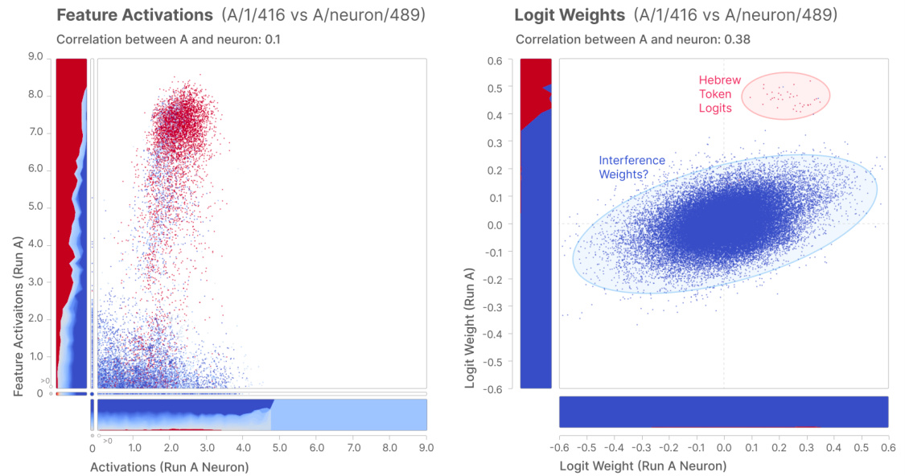
To cross-validate this, we also searched for any neuron where the main Hebrew Unicode block appeared in the top dataset examples. We found none.
UNIVERSALITY
A/1/416 has a correlated feature in the B/1 run, B/1/1901 (corr=0.92) that has significant activation specificity:
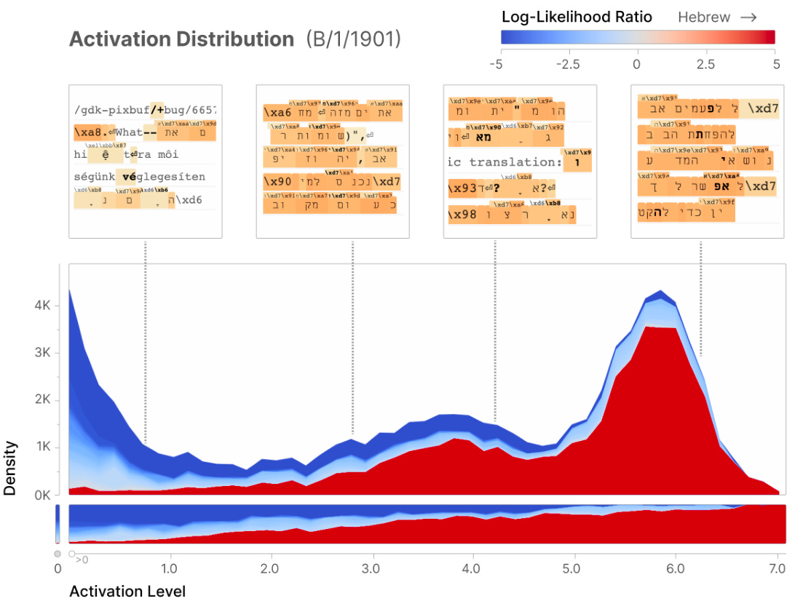
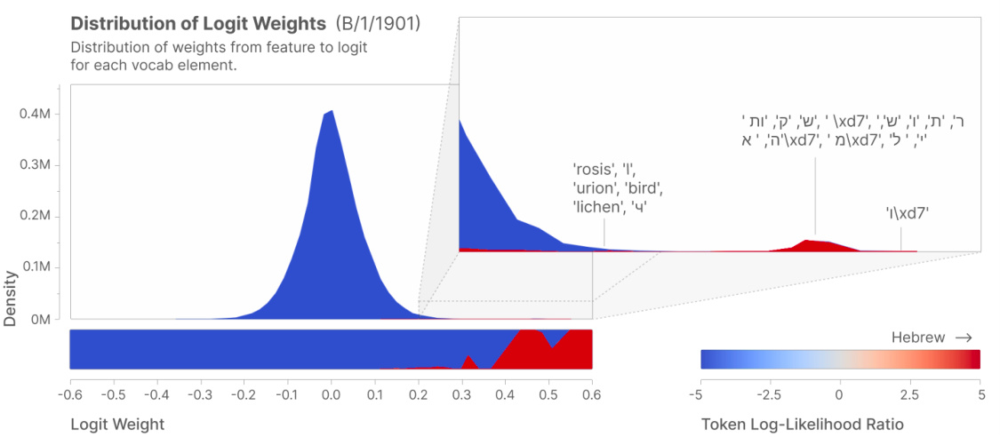
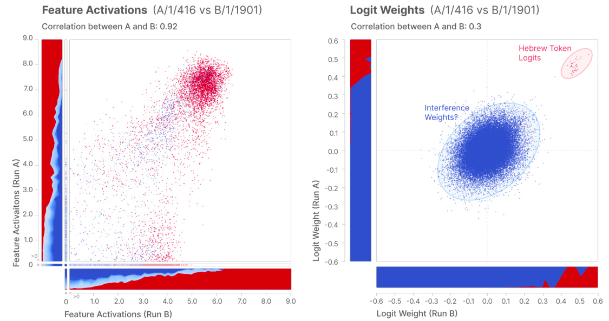
Global Analysis
If the previous section has persuaded you that at least some of the features are genuinely interpretable and reflect the underlying model mechanics, it's natural to wonder how broadly this holds outside of those cherrypicked features. The primary focus of this section will be to answer the question, "how interpretable are the rest of the features?" We show that both humans and large language models find our features to be significantly more interpretable than neurons, and quite interpretable in absolute terms.
There are a number of other questions one might also ask. To what extent is our dictionary learning method discovering all the features necessary to understand the MLP layer? Holistically, how much of the MLP layer's mechanics have been made interpretable? We are not yet able to fully answer these questions to our satisfaction, but will provide some preliminary speculation towards the end of this section.
We note that of the 4,096 learned features in the A/1 autoencoder, 168 of them are "dead" (active on none of the 100 million dataset examples) and 292 of them are "ultralow density", active on less than 1 in a million dataset examples and exhibiting other atypical properties. We exclude both these groups of features from further analyses.
How Interpretable is the Typical Feature?
In this section, we use three different methods to analyze how interpretable the typical feature is, and how that compares to neurons: human analysis, and two forms of automated interpretability. All three approaches find that features are much more interpretable than neurons.
MANUAL HUMAN ANALYSIS
At present, we do not have any metric we trust more than human judgment of interpretability. Thus, we had a blinded annotator (one of the authors, Adam Jermyn) score features and neurons based on how interpretable they are. The scoring rubric can be found in the appendix and accounts for confidence in an explanation, consistency of the activations with that explanation, consistency of the logit output weights with that explanation, and specificity.
In doing this evaluation, we wanted to avoid a weakness we perceived in our prior work (e.g., [38] ) of focusing evaluation predominantly on maximal dataset examples, and paying less attention to the rest of the activation spectrum. Many polysemantic neurons appear monosemantic if you only look at top dataset examples, but are revealed to be polysemantic if you look at lower parts of the activation spectrum. To avoid this, we draw samples uniformly across the spectrum of feature activations,22 and score each interval separately in light of the overall hypothesis suggested by the feature.
Unfortunately, this approach is labor intensive and so the number of scored samples is small. In total, 412 feature activation intervals were scored across 162 features and neurons.
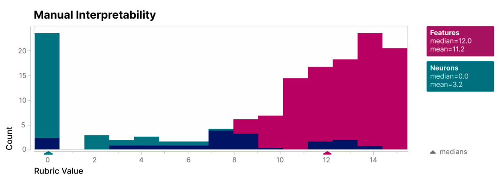
We see that features are substantially more interpretable than neurons. Very subjectively, we found features to be quite interpretable if their rubric value was above 8. The median neuron scored 0 on our rubric, indicating that our annotator could not even form a hypothesis of what the neuron could represent! Whereas the median feature interval scored a 12, indicating that the annotator had a confident, specific, consistent hypothesis that made sense in terms of the logit output weights.
AUTOMATED INTERPRETABILITY – ACTIVATIONS
To analyze features at a larger scale, we turned to automated interpretability [45, 46] . Following the approach of Bills et al. [45] , we have a large language model, Anthropic’s Claude, generate explanations of features using examples of tokens where they activate. Next, we have the model use that explanation to predict new activations on previously unseen tokens.23
Like with the human analysis, we used samples across the full range of activation intervals to evaluate monosemanticity.24 Concretely, for each feature, we computed the Spearman correlation coefficient between the predicted activation and the true activations for 60 dataset examples made up of nine tokens each, resulting in 540 predictions per feature. While only using completely random sequences would be the most principled approach to scoring, half of the examples are from across the feature intervals to get a more accurate correlation. See the appendix for additional information including the use of importance scoring to precisely counter-weight the bias of providing tokens the feature fires for.
In agreement with the human analysis, Claude is able to explain and predict activations for features significantly better than for neurons.25
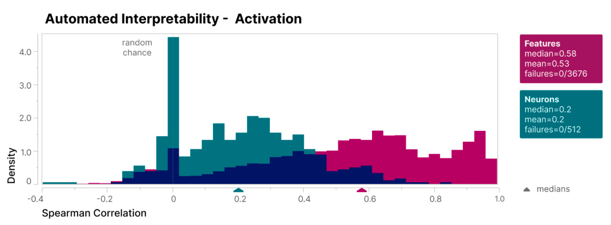
AUTOMATED INTERPRETABILITY – LOGIT WEIGHTS
In our earlier analysis of individual features, we found that looking at the logits is a powerful tool for crossvalidating the interpretability of features. We can take this approach in automated interpretability as well. Using the explanations of features generated in the previous analysis, we ask a language model to predict if a previously unseen logit token is something the feature should predict as likely to come next. This is then scored against a 50/50 mix of top positive logit tokens and random other logit tokens. Randomly guessing would give a 50% accuracy, but the model instead achieves a 74% average across features, compared to a 58% average across neurons. Failures here refer to instances where Claude failed to reply in the correct format for scoring.
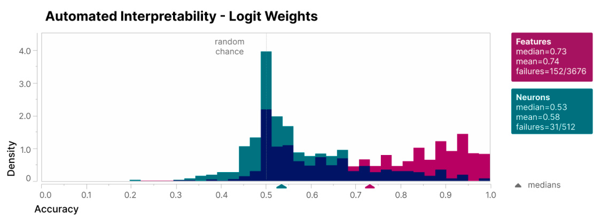
In addition to studying features as a whole, in our manual analysis we can zoom in on portions of the feature activation spectrum using the feature intervals. As before, a feature interval is the set of examples with activations closest to a specific evenly-spaced fraction of the max activation. So, rather than asking if a feature seems interpretable, we ask whether a range of activations is consistent with the overall hypothesis suggested by the full spectrum of the feature’s activation. This allows us to ask how interpretability changes with feature activation strength.
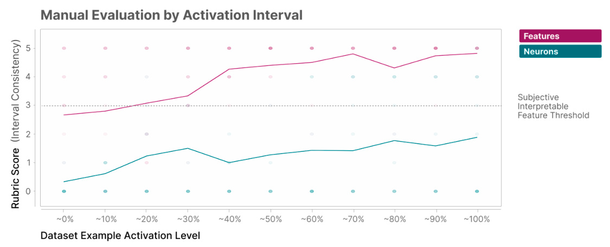
Higher-activating feature intervals were more consistent with our interpretations than lower-activating ones. In particular:
-
Many features show consistent activations across the entire activation spectrum.
-
Some features show consistent activations across the top ~60% of the activation spectrum, and then quickly become less interpretable as we look to smaller and smaller activations.
It is possible that this is a sign that our features are not quite right. For instance, if one of our features is at a slight angle to the feature we’d really like to have learned, that can show up as inconsistent behavior in the lower activation intervals.
CAVEATS
Our manual and automated interpretability experiments have a few caveats:
- Feature activations are skewed towards the lower intervals. Most feature activations are quite small, and so fall in the lower (and less-interpretable) feature intervals. That said, as we found in our detailed analysis, most of the effect of a feature26 is due to its higher activations, which are quite interpretable.
The evaluated features are sampled uniformly from among the set of all features, and
interpretability might be correlated with importance. One could imagine evaluating the features with the largest magnitude of activations, or the largest effect when ablated. Our sense is that these would be more interpretable than the randomly sampled features we considered. One could imagine a situation where the most important features in some sense were systematically less interpretable, though inspection of the most active features suggests the opposite.
Based on our inspection of many features in the visualization, we believe these caveats do not affect the experimental results. We encourage interested readers to open the visualization for A/1 and the corresponding neurons. You can sort by ‘random’ to get an unbiased sample and do your own version of the above experiment, or sort features by importance metrics such as max activation and max density to evaluate the final caveat above.
How much of the model does our interpretation explain?
We now turn to the question we're least able to answer – to what extent do these seemingly interpretable features represent the "full story" of the MLP? One could imagine posing this question in a variety of ways. What fraction of the MLP loss contribution have we made interpretable? How much model behavior can we understand? If there really are some discrete set of "true features", what fraction have we discovered?
One way to partly get at this question is to ask how much of the loss is explained by our features. For A/1, the run we've focused most on in this paper, 79% of the log-likelihood loss reduction provided by the MLP layer is recovered by our features. That is, the additional loss incurred by replacing the MLP activations with the autoencoder's output is just 21% of the loss that would be incurred by zero ablating the MLP. This loss penalty can be reduced by using more features, or using a lower L1 coefficient. As an extreme example, A/5 ( n_learned_sparse=131,072 , l1_coefficient=0.004 ) recovers 94.5% of log-likelihood loss.
These numbers should be taken with a significant grain of salt. The biggest issue is that framing this question in terms of fraction of loss may be misleading – we expect there to be a long-tail of features such that as the fraction of loss explained increases, more and more features are needed to explain the residual. Another issue is that we don't believe our features are completely monosemantic (some polysemanticity may be hiding in low activations), nor are all of them necessarily cleanly interpretable. With all of that said, our earlier analyses of individual features (e.g. the Arabic feature, base64 feature, etc.) do show that specific interpretable features are used by the model in interpretable ways – ablating them decreases probabilities in the appropriate way, and artificially activating them causes a corresponding behavior. This seems to confirm that the 79% of loss recovered is measuring something real, despite these caveats.
In principle, one could use automated interpretability to produce a better measure here: replacing activations with those predicted from explanations. (We believe others in the community have recently been considering this!) The naive versions of this would be quite computationally expensive,27 although there may be approximations. More generally, there is a much broader space of possibilities here. Perhaps there's a principled way to do this analysis in terms of single features – there are significant conceptual issues, but one might be able to formalize earlier notions of "feature importance" as an independent loss contribution a feature makes, and then analyze how much of that specific feature can be recovered.
Overall, we view the problem of measuring the degree to which a feature-based interpretation explains a model to be an important open question, where significant work is necessary on both defining metrics and finding efficient ways to compute them.
Do features tell us about the model or the data?
A model's activations reflect two things: the distribution of the dataset and the way that distribution is transformed by the model. Dictionary learning on activations thus mixes data and model properties, and intriguing properties of learned features may be attributed to either or both sources. Correlations in the data can persist after application of the first part of the model (up to the MLP), and it is in theory possible that the intriguing features we see are merely artifacts of dataset correlations projected into a different space. However, the use of those features by the second half of the model (MLP downprojection and unembedding) are not an input to dictionary learning, so the interpretability of the downstream effects of those features must be a property of the model.
To assess the effect of dataset correlations on the interpretability of feature activations, we run dictionary learning on a version of our one-layer model with random weights.28 The resulting features are here, and contain many single-token features (such as "span", "file", ".", and "nature") and some other features firing on seemingly arbitrary subsets of different broadly recognizable contexts (such as LaTeX or code). However, we are unable to construct interpretations for the non-single-token features that make much sense and invite the reader to examine feature visualizations from the model with randomized weights to confirm this for themselves. We conclude that the learning process for the model creates a richer structure in its activations than the distribution of tokens in the dataset alone.
To assess the interpretability of the downstream feature effects, we again use the three main approaches of the previous section:
-
Logit weight inspection. The logit weights represent the effect of each feature on the logits, and, as demonstrated in our earlier investigations of individual features, they are consistent with the feature activations for the base64, Arabic, and Hebrew features. The reader is invited to inspect logit weights for all features in the visualization.
-
Feature ablation. We set the value of a feature to zero throughout a context, and record how the loss on each token changes. Ablations are available for all features in the visualization.
-
Pinned feature sampling. We artificially pinned the value of a feature to a fixed high number and then sample from the model. We find that the generated text matches the interpretation of the feature.
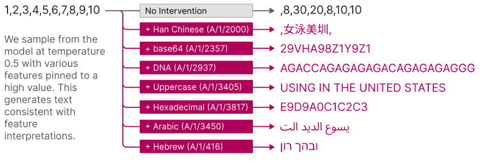
The empirical consistency of feature activations with their downstream effects across all these metrics provides evidence that the features found are being used by the model.
Phenomenology
Ultimately, the goal of our work is to understand neural networks. Decomposition of models into features is simply a means to this end, and one might very reasonably wonder if it's genuinely advancing our overall goal. So, in this section, we'll turn attention to the lessons these features can teach us about neural networks. (We've taken to calling this work of leveraging our theoretical understanding to reason about model properties phenomenology by analogy to phenomenology in physics, and the 2019 ICML workshop on phenomena in deep learning.)
One way to do this would be to give a detailed discussion of the features we've found (similar to [47, 48] ), but we believe the best way to get a sense of the features we discovered is simply to browse the interface for exploring features which we've published alongside this paper. The features we find vary enormously, and no concise summary will capture their breadth. Instead, we will largely focus on more abstract properties and patterns that we notice. These abstract properties will be able to inform – although by no means answer – questions like "Are these the real features?" and "What is actually going on in a one-layer model?"
We begin by discussing some basic motifs and observations about features. We'll then discuss how the features we relate compare to features in other dictionary learning runs and in other models. This will suggest that features are universal and that dictionary learning can be understood as a process of feature splitting that reflects something deep about the geometry of superposition. Finally, we'll explore how features connect together into "finite state automata" as systems that implement more complex behaviors.
Feature Motifs
What kinds of features do we find in our model?
One strong theme is the prevalence of context features (e.g. DNA, base64) and token-in-context features (e.g. the in mathematics – A/0/341, < in HTML – A/0/20).29 These have been observed in prior work (context features e.g. [38, 49, 45] ; token-in-context features e.g. [38, 15] ; preceding observations [50] ), but the sheer volume of token-in-context features has been striking to us. For example, in A/4, there are over a hundred features which primarily respond to the token "the" in different contexts.30 Often these features are connected by feature splitting (discussed in the next section), presenting as pure context features or token features in dictionaries with few learned features, but then splitting into token-in-context features as more features are learned.
Another interesting pattern is the implementation of what seem to be "trigram" features, such as a feature that predicts the 19 in COVID-19 (A/2/12310). Such features could in principle be implemented with attention alone, but in practice the model uses the MLP layer as well. We also see features which seem to respond to specific, longer sequences of tokens. These are particularly striking because they may implement "memorization" like behavior – we'll discuss this more later.
Finally, it's worth noting that all the features we find in a one-layer model can be interpreted as "action features" in addition to their role as "input features". For example, a base64 feature can be understood both as activating in response to base64 strings, and also as acting to increase the probability of base64 strings. The "action" view can clarify some of the token-in-context features: the feature A/0/341 predicts noun phrases in mathematical text, upweighting nouns like denominator and adjectives like latter . Consequently, while it activates most strongly on the , it also activates on adjectives like special and this which are also followed by noun phrases. This dual interpretation of features can be explored by browsing our interface. Several papers have previously explored interpreting neurons as actions (e.g. [51] ), and one-layer models are particularly suited to this, since it's a particularly principled way to understand the last MLP layer, and the only MLP in a one-layer model is the last layer.
Feature Splitting
One striking thing about the features we’ve found is that they appear in clusters. For instance, we observed above multiple base64 features, multiple Arabic script features, and so on. We see more of these features as we increase the total number of learned sparse features, a phenomenon we refer to as feature splitting. As we go from 512 features in A/0 to 4,096 features in A/1 and to 16,384 features in A/2, the number of features specific to base64 contexts goes from 1 to 3 to many more.
To understand how the geometry of the dictionary elements correspond to these qualitative clusters, we do a 2-D UMAP on the combined set of feature directions from A/0, A/1, and A/2.
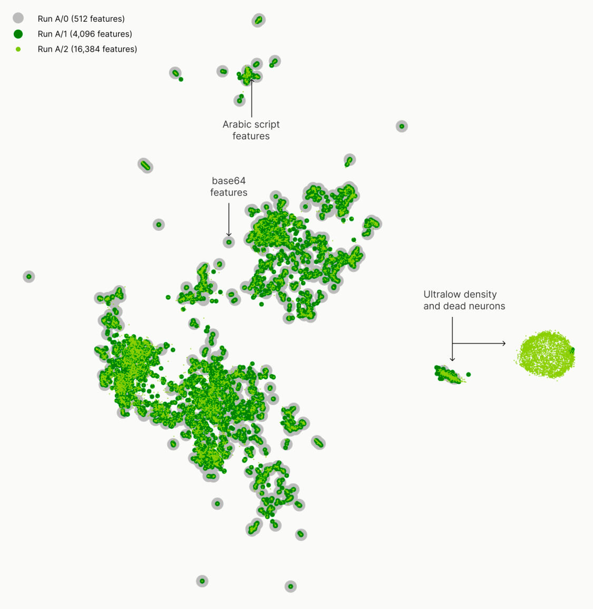
We see clusters corresponding to the base64 and Arabic script features, together with many other tight clusters from specific contexts and a variety of other interesting geometric structures for other features. This confirms that the qualitative clusters are reflected in the geometry of the dictionary: similar features have small angles between their dictionary vectors.
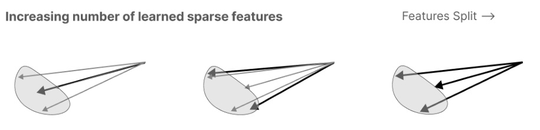
We conjecture that there is some idealized set of features that dictionary learning would return if we provided it with an unlimited dictionary size. Often, these "true features" are clustered into sets of similar features, which the model puts in very tight superposition. Because the number of features is restricted, dictionary learning instead returns features which cover approximately the same territory as the idealized features, at the cost of being somewhat less specific.
In this picture, the reason the dictionary vectors of conceptually similar features are similar is that they are likely to produce similar behaviors in the model, and so should be responsible for similar effects in the neuron activations. For instance, it would be natural for a feature that fires on periods to predict tokens with a leading space followed by a capital letter. If there are multiple features that fire on periods, perhaps on periods in somewhat different contexts, these might all predict tokens with a leading space, and those predictions might well involve producing similar neuron activations. The combination of features being highly correlated and having similar "output actions", causes real models to have both denser and more structured superposition than what we observed in our previous toy models work [5] .31
If this picture is true, it would be important for a number of reasons. It suggests that determining the "correct number of features" for dictionary learning is less important than it might initially seem. It also suggests that dictionary learning with fewer features can provide a "summary" of model features, which might be very important in studying large models. Additionally, it would explain some of the stranger features we observe in the process of dictionary learning, suggesting that these are either "collapsed" features which would make sense if split further (see "Bug" 1: Single Token Features), or else highly-specific "split" features which do in fact make sense if analyzed closely (see "Bug" 2: Multiple Features for a Single Context). Finally, it suggests that our basic theory of superposition in toy models is missing an important dimension of the problem by not adequately studying highly correlated and "action sharing" features.
EXAMPLE: MATHEMATICS AND PHYSICS FEATURES
In this example, our coarsest run (with 512 learned sparse features) has three features describing tokens in
different technical settings. Using the masked cosine similarity32 between feature activations, we are able to identify how these features refine and split in runs with more learned sparse features.
What we see is that the finer runs reveal more fine-grained distinctions between e.g. concepts in technical writing, and distinguish between the articles the and a , which are followed by slightly different sets of noun phrases. We also see that the structure of this refinement is more complex than a tree: rather, the features we find at one level may both split and merge to form refined features at the next. In general though, we see that runs with more learned sparse features tend to be more specific than those with fewer.
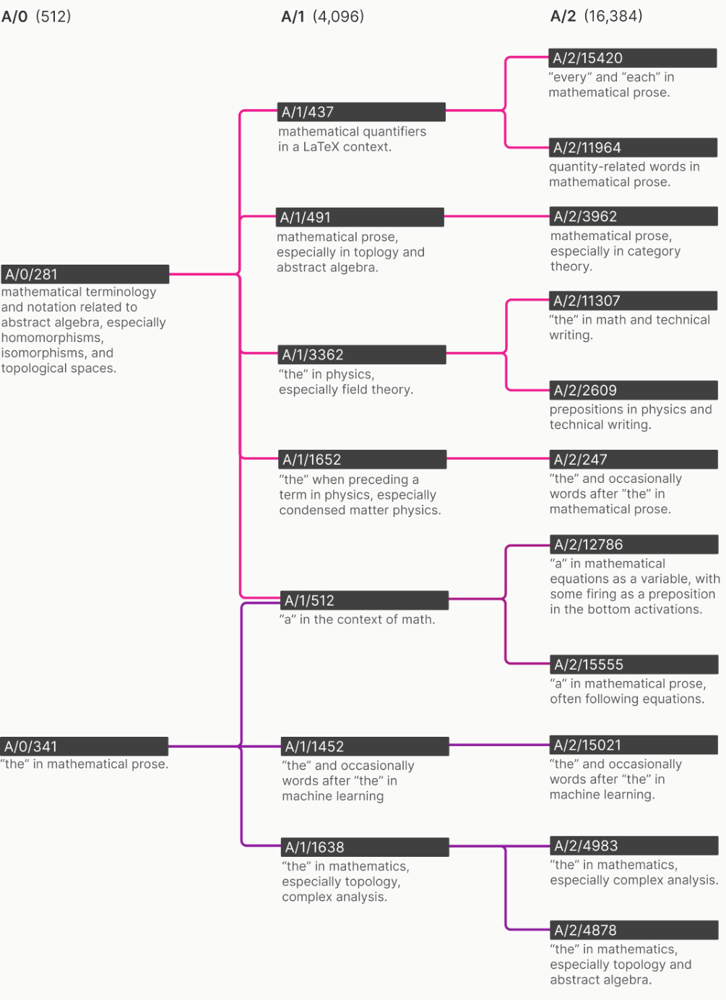
It's worth noting that these more precise features reflect differences in model predictions as well as activations. The general the in mathematical prose feature (A/0/341) has highly generic mathematical tokens for its top positive logits (e.g. supporting the denominator , the remainder , the theorem ), whereas the more finely split machine learning version (A/2/15021) has much more specific topical predictions (e.g. the dataset , the classifier ). Likewise, our abstract algebra and topology feature (A/2/4878) supports the quotient and the subgroup , and the gravitation and field theory feature (A/2/2609) supports the gauge , the Lagrangian , and the spacetime .
FEATURES WHICH SEEMED LIKE BUGS
"Bug" 1: Single-Token Features
When we limit dictionary learning to use very few learned sparse features, the features that emerge sometimes look quite strange. In particular, there are a large number of high-activation magnitude features which each only fire on a single token, and which seem to fire on every instance of that token. Such features are strange because the model could achieve the same effect entirely by learning different bigram statistics, and so should have no reason to devote MLP capacity to these. Similar features were also recently observed in a report by Smith [15] .
We believe that feature splitting explains this phenomenon: the model hasn’t learned a single feature firing on the letter P ,33 for instance. Rather, it’s learned many features which fire on P in different contexts34 , with correspondingly different effects on the neuron activations and output logits (see below). At a sufficiently coarse level dictionary learning cannot tell the difference between these, but when we allow it to use more learned sparse features, the features split and refine into a zoo of different P features that fire in different contexts.
"Bug" 2: Multiple Features for a Single Context
We also observed the converse, where multiple features seemed to cover roughly the same concept or context. For example, there were three features in A/1 which fired on (subsets of) base64 strings, and predicted plausible base64 tokens like zf , mF , and Gp . One of these features was discussed in detail earlier, where we showed it fired for base64 strings. But we also observed that it didn't fire for all base64 strings – why? And what are the other two features doing? Why are there three?
In A/0 (with 512 features), the story is simple. There is only one base64-related feature, A/0/45, which seems to activate on all tokens of base64-encoded strings. But in A/1, that feature splits into three different features whose activations seem to jointly cover those of A/0/45:
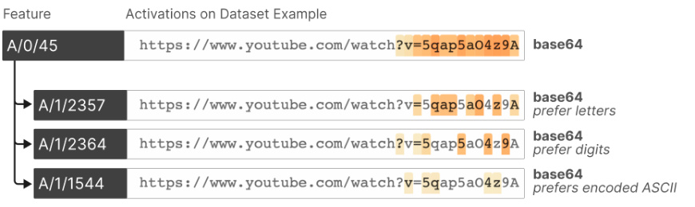
Two of these features seem relatively straightforward. A/1/2357 seems to fire preferentially on letters in base64, while A/1/2364 seems to fire preferentially on digits.
Comparing the logit weights of these features reveals that they predict largely the same sets of tokens, with one significant difference: the feature that fires on digits has much lower logit weights for predicting digits. Put another way, if the present token is made of digits, the model will predict that the next token is a non-digit base64 token.
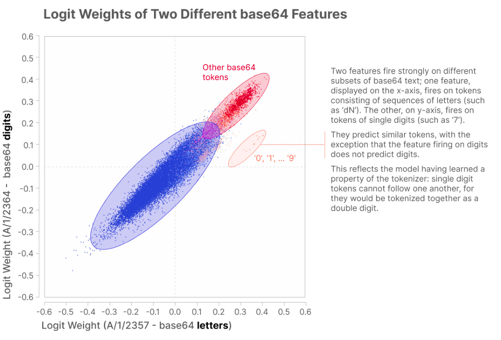
We believe this is likely an artifact of tokenization! If a single digit were followed by another digit, they would have been tokenized together as a single token; [Bq][8][9][mp] would never occur, as it would be tokenized instead as [Bq][89][mp] . Thus even in a random base64 string, the fact that the current token is a single digit gives information about the next token.
But what about the third feature, A/1/1544? At first glance, there isn't an obvious rule for when it fires. But if we look more closely, we notice that it seems to respond to base64 strings which encode ASCII text.35 If we look at the top dataset examples for each feature, we find that examples for A/1/1544 contain substrings which decode as ASCII, while none of the top activating examples for A/1/2357 or A/1/2364 do:36
This pattern of investigation, where one looks at coarser sets of features to understand categories of model behavior, and then at more refined sets of features to investigate the subtleties of that behavior, may prove well adapted to larger models where the feature set is expected to be quite large.
It's also worth noting how dictionary learning features were able to surprise us here. Many approaches to interpretability are top-down, and look for things we expect. But who would have known that models not only have a base64 feature, but that they distinguish between distinct kinds of base64 strings? This reminds us of cases like high-low frequency detectors [52] or multimodal neurons [48] where surprising and unexpected features were discovered in vision models.
Universality
One of the biggest "meta questions" about features is whether they're universal [53, 4] – do the same features form across different models? This question is generally important because it bears on whether the hard-earned lessons from studying one model will generalize to others. But it's especially important in the context of attempting to extract features from superposition because universality could provide significant evidence that the features we're extracting are "real", or at least reproducible.37
Earlier, we saw that all the features we performed detailed analyses of (e.g. the Arabic feature, or base64 feature) were universal between two one-layer models. But is this true for typical features in our model? And how broadly is it true – do we only observe the same feature if we train models of the same architectures on the same dataset, or do these features also occur in more divergent models? This section will seek to address these two questions. The first subsection will quantitatively analyze how widespread universality is between the two one-layer models we studied, while the second will compare the features we find to others reported in the literature in search of a stronger form of universality.
We observe substantial universality of both types.38 At a high-level, this makes sense: if a feature is useful to one model in representing the dataset, it's likely useful to others, and if two models represent the same feature then a good dictionary learning algorithm should find it.
COMPARING FEATURES BETWEEN TWO ONE-LAYER TRANSFORMERS
To compare features from different models, we need model-independent ways to represent a feature.
One natural approach is to think of a feature as a function assigning values to datapoints; two features would be similar in this sense if they take similar values over a diverse set of data. This general approach has been explored by a number of prior papers (e.g. [54, 53, 55, 56] ). In practice, this can be approximated by representing the feature as a vector, with indices corresponding to a fixed set of data points. We call the correlations between these vectors the activation similarity between features.
A second natural approach is to think of a feature in terms of its downstream effects; two features would be similar in this sense if their activation changes their models' predictions in similar ways. In our one-layer model, a simple approximation to this is the logit weights. This approximation represents each feature as a vector with indices corresponding to vocabulary tokens. We call the correlations between these vectors the logit weight similarity between features.
These two notions of similarity correspond to the correlations of the points in the two scatter plots we used when analyzing individual features earlier. We've reproduced the plots for the Arabic feature below:
For each feature in run A/1, we find the closest feature by activation similarity in run B/1, which is a different dictionary learning run trained on different activations from a different transformer with different random seeds but otherwise identical hyperparameters. We find that many features are highly similar between models, with features in A/1 having a median activation correlation of 0.72 with the most similar feature from B/1. (We perform the same analysis finding the closest neurons between the transformers, and find significantly less similarity, with median activation correlation 0.46.) The features with low activation correlation between models may represent different "feature splittings" in the dictionaries learned or different "true features" learned by the base models.
A natural next question is whether features that fire on the same tokens also have the same logit effects. That is, how well do activation similarity and logit weight similarity agree?
Some gap between the two is visible for the Arabic feature above: the "important tokens" for the features' effects (the ones in Arabic script) are upweighted by features from both models, but there is a large cloud of tokens with smaller effects that appear to almost be isotropic noise, resulting in a logit weight correlation of just 0.23, significantly below the activation correlation of 0.91.
In the scatterplot below, we find that this kind of disagreement is widespread.
The most dramatic example of this disparity is for the features A/1/3949 and B/1/3321, with an activation correlation of 0.98 but a negative logit weight correlation. These features fire on pone (and occasionally on pgen and pcbi ) as abbreviations for the journal name PLOSOne in citations, like @ pone .0082392 , and predict the . that follows.39
Zooming in on the logit weight scatterplot (inset in the figure above), we see that only the . token has high logit weight in both models, and that every other token is in the 'interference' portion of the logit weight distribution. Indeed, the model may simply not care about what the feature does to tokens which were already implausible because they are suppressed by the direct path, attention layer, or other features of the MLP.
We want to measure something more like "the actual effect a feature has on token probabilities." One way to get at this would be to compute a vector of ablation effects for every feature on every data point; pairs of features whose ablations hurt the model's predictions on the same tokens must have been predicting the same thing. Unfortunately, this would be rather expensive computationally. Instead, we scale the activation vector of a feature by the logit weights of the tokens that empirically come next in the dataset to produce an attribution vector.40 Correlations between those vectors provide an attribution similarity that combines both the activity of the feature with the effect it has on the loss. We find that the attribution similarity correlates quite highly with the activation similarity, meaning that features that were coactive between models were useful at predicting the same tokens.
In light of this, we feel that the activation correlation used throughout the paper is in fact a good proxy for both notions of universality in the context of our one-layer models.
COMPARING FEATURES WITH THE LITERATURE
So far, we've established that many of our features are universal in a limited sense. Features found in one of our transformers can also be found in an alternative version trained with a different random seed. But this second model has an identical architecture and was trained on identical data. This is the most minimal version of
universality one could hope for. Despite this, we believe that many of the features we've found are universal in a deeper sense, because very similar features have been reported in the literature before. The first comparison which struck us is that many features seem quite similar to neurons we previously found in one-layer SoLU models, which use an activation function designed to make neurons more monosemantic [38] . In particular, we observed a base64 neuron, hexadecimal neuron, and all caps neuron in our SoLU investigations, and base64 (A/0/45), hexadecimal (A/0/119), and all caps (A/0/317) features here. Discussion of some of these neurons can be found in Section 6.3.1 of the SoLU paper.
We also find many features similar to Smith [15] , who applies dictionary learning to the residual stream. In addition to us also observing preponderance of single token features they note (see our interpretation of this phenomenon), we find a similar German detector (e.g. A/0/493) and similar title case detectors (e.g. A/0/508). Likewise, we find a number of features similar to Gurnee et al. [49] , including a "prime factors" feature (A/4/22414) and a French feature (A/0/14).
At a more abstract level, many features we find seem similar to features reported in multimodal models by Goh et al. [48] . For example, we find many similar features including an Australia feature (A/3/16085), Canada feature (A/3/13683), Africa feature (A/3/14490), and Israel-Palestine feature (A/3/739) which predict locations in those regions when grammatically appropriate. This vaguely mirrors "region neurons" reported by Goh et al.'s paper. For other families of features, the parallels are less clear. For example, one of the most striking results of Goh et al. was person detector neurons (similar to famous results in neuroscience). We find some features that are person detectors in very narrow contexts, such as responding to a person’s name and predicting appropriate next words, or predicting their name (e.g. A/1/3240 is somewhat similar to Goh et al.'s Trump neuron), but they seem quite narrow. We also don't find features that seem clearly analogous to Goh et al.'s emotion neurons.
"Finite State Automata"
One of the most striking phenomena we've observed in our study of the features in one-layer models is the existence of "finite state automata"-like assemblies of features. These assemblies aren't circuits in the conventional sense – they're formed by one feature increasing the probability of tokens, which in turn cause another feature to fire on the next step, and so on.41
The simplest example of this is features which excite themselves on the next token, forming a single node loop. For example, a base64 feature increases the probability of tokens like Qg and zA – plausible continuations which would continue to activate it.
It's worth noting that these examples are from A/0, a dictionary learning run which is not overcomplete (the dictionary dimensionality is 512, equal to the transformer MLP dimension). As we move to runs with larger numbers of features, the central feature will experience feature splitting, and become a more complex system.
Let's now consider a two-node system for producing variables in "all caps snake case" (e.g. ARRAY_MAX_VALUE ). One node (A/0/207) activates on the all caps text tokens, the other (A/0/358) on underscores:
This type of two-node system is quite common for languages where Unicode characters are sometimes split into two tokens. (Again, with more feature splitting, these would expand into more complex systems.)
For example, Tamil Unicode characters (block U+0B80–U+0BFF) are typically split into two tokens. For example, the character " ண " (U+0BA3) is tokenized as \xe0\xae followed by \xa3 . The first part ( \xe0\xae or \xe0\xaf ) roughly specifies the Unicode block, while the second component specifies the character within that block. Thus, it's natural for the model to alternate between two features, one for the Unicode prefix token, and one for the suffix token.
A more complex example is Chinese. While many common Chinese characters get dedicated tokens, many others are split. This is further complicated by Chinese characters being spread over many Unicode blocks, and those blocks being large and cutting across many logical blocks specified in terms of bytes. To understand the state machine the model implements to handle this, the key observation is that complete characters are similar to the "suffix" part of a split character: both can be followed by either a new complete character, or a new prefix. Thus, we observe two features, one of which fires on either complete characters or the suffix (predicting either a new complete character, or a prefix), while the other only fires on the prefixes and predicts suffixes.
Let's now consider a very simple four node system which models HTML. The "main path" through it is:
-
A/0/20 fires on open tags and predicts tag names
-
A/0/0 fires on tag names and predicts tag closes
-
A/0/30 fires on tag closes and predicts whitespace
-
A/0/494 fires on whitespace and predicts new tag opens.
A prototypical sample this might generate is something like <div>\n\t\t<span> .
The full system can be seen below:
Keep in mind that we're focusing on the A/0 features where this is very simple – if we looked at A/1, we'd find something much more complex! One particularly striking shortcoming of the A/0 features is that they don't describe what happens when A/0/0 emits a token like href , which leads to a more complex state.
It's important to note that these features can be quite contextual. There are several features related to IRC transcripts which form a totally different finite state automata like system:
A prototypical sample this might generate is something like <nickonia_> lol ubuntu ;) . Presumably the Pile dataset heavily represents IRC transcripts about linux.
One particularly interesting behavior is the apparent memorization of specific phrases. This can be observed only in runs with relatively large numbers of features (like A/4). In the following example, a sequence of features seem to functionally memorize the bolded part of the phrase
MERCHANTABILITY or FITNESS FOR A PARTICULAR PURPOSE . This is a relatively standard legal language, and notably occurs in the file headers for popular open source software licenses, meaning the model likely saw it many times during training.
This seems like an example of the mechanistic theory of memorization we described in Henighan et al. [57] – we observe features which appear to be relatively binary and respond to a very specific situation. This might also be seen as an instance of mechanistic anomaly detection [58] : the model behaves differently in a specific, narrow case. It's somewhat surprising that something so narrow can be found in a model with only 512 neurons; from this perspective it's an interesting example of superposition's ability to embed many things in few neurons. On the other hand, because these mechanisms are buried deep in superposition, they are likely very noisy.
Related Work
Superposition and attempts to resolve it have deep connections to many lines of research, including general investigations of interpretable features, linear probing, compressed sensing, dictionary learning and sparse coding, theories of neural coding, distributed representations, mathematical frames, vector symbolic architectures, and much more. Rather than attempt to do justice to all these connections here, we refer readers to the related work section of Toy Models of Superposition [5] where we discuss these topics in depth, and also to our essay Distributed Representations: Composition & Superposition [44] . Instead, we'll focus our discussion on work connected to our attempts to solve superposition, and also more recent advancements in our understanding of superposition.
SUPERPOSITION
Since we published Toy Models of Superposition there has been significant further work attempting to better understand superposition. We briefly summarize below.
Is superposition real? Gurnee et al. [49] demonstrate some compelling examples of features which may be in superposition, using sparse linear probes. Separately, an exchange between Li et al. [34] and Nanda et al. [31] seems like an update on whether the general picture of features as directions is correct; Li et al. seemed to show that it wasn't, putting the hypothesis in jeopardy, which was then resolved by Nanda et al.
When and why does superposition occur? Scherlis et al. [36] provide a mathematical framework for thinking about monosemanticity vs polysemanticity. lsgos [59] explored the effects of dropout on toy models of superposition. Memorization – In Henighan et al. [57] , we studied the same toy model as in Toy Models of Superposition, but this time trained on many repetitions of finite-sized datasets. We found that small datasets are memorized in superposition, instead of generalizing features in the case of large datasets. Hobbhahn [60] replicated some of these findings, and further showed extensions to other settings including bottlenecks between layers (analogous to the residual stream between MLP layers). Subsequently, in a monthly update we examined the boundary between the memorization and generalization regimes and found a sharp phase transition, as well as dataset clustering in superposition on the memorization side of the boundary.
DISENTANGLEMENT AND ARCHITECTURAL APPROACHES
There is also a rich and related literature on disentanglement, which seeks to find representations of data that separate out (disentangle) conceptually-distinct phenomena influencing the data. In contrast to superposition, this work typically seeks to find a number of factors of variation or features which are equal to the dimensionality of the space being represented, whereas superposition seeks to find more.
This is often approached as an architecture/training-time problem. For instance, Kim & Mnih [61] proposed a method that pushes variational autoencoders to disentangle factors by encouraging independence across dimensions. Similarly, Chen et al. [62] developed a Generative Adversarial Network approach that attempts to disentangle factors by maximizing the mutual information between a small subset of factors and the dataset. And Makhzani & Frey [63] use a TopK activation to encourage sparsity and hence disentanglement. See Bengio et al. [64] and Räuker et al. [65] for a discussion of other such approaches.
Framed this way, some architectural approaches to superposition may also be understood as attempts at disentanglement. For instance, in Elhage et al. [38] , we proposed the SoLU activation function, which increases the number of interpretable neurons in transformers by encouraging features to align to the neuron basis. Unfortunately, it appears that training models with the SoLU activation function may make some neurons more interpretable at the cost of making others even less interpretable than before.
Similarly, Jermyn et al. [35] studied MLP layers trained on a compressed sensing task and found multiple equalloss minima, with some strongly polysemantic and others strongly monosemantic. This suggested that training interventions could steer models towards more monosemantic minima, though subsequent investigations on more realistic tasks suggested that the equal-loss property was specific to the chosen task.
These two examples of attempts to tackle superposition through architecture, and the challenges they encountered, highlight a key distinction between the problems of disentanglement and that of superposition: disentanglement fundamentally seeks to ensure that the dimensions in the model’s latent space are disentangled, whereas superposition hypothesizes that this disentanglement typically hurts performance (since success would require throwing away many features), and that models will typically respond to disentangling interventions by making some features more strongly entangled (as was found by both Mahinpei et al. [66] and Elhage et al. 2022 [38] in somewhat different contexts).
DICTIONARY LEARNING AND FEATURES
Our work builds on a longer tradition of using dictionary learning and sparse autoencoders to decompose neural network activations.
Early work in this space focused on word embeddings and other non-transformer neural networks. Faruqui et al. [6] and Arora et al. [2] both found linear structure in word embeddings using sparse coding approaches. Subramanian et al. [7] similarly found linear factors for word embeddings, in this case using a sparse autoencoder. Zhang et al. [8] solved a similar problem using methods from dictionary learning while Panigrahi et al. [9] approached this with Latent Dirichlet Allocation.
More recently, a number of works have applied dictionary learning methods to transformer models. Yun et al. [10] applied dictionary learning to the residual stream of a 12-layer transformer to find an undercomplete basis of features.
At this point, our work in Toy Models [5] advocated for dictionary learning as a potential approach to superposition. This motivated a parallel investigation by our colleagues Cunningham et al., published as a series of interim reports [11, 12, 13, 14, 15, 16] with very similar themes to this paper, culminating in a manuscript [17] . We've been excited to see so many corroborating findings between our work.
In their interim reports, Sharkey et al. [11] used sparse autoencoders to perform dictionary learning on a onelayer transformer, identifying a large (overcomplete) basis of features. (Sharkey et al. deserve credit for focusing on dictionary learning and especially the sparse autoencoder approach, while our investigation was only exploring it as one of several approaches in parallel.) This work was then partially replicated by Cunningham & Smith [12] and Huben [13] . Next, Smith [14] used an autoencoder to find features in one MLP layer of a six-layer model. The resulting features appear interpretable, e.g. detecting ‘$’ in the context of LaTeX equations. In follow up work, Smith then extended this approach to the residual stream of the same model, identifying a number of interesting features (see earlier discussion). Building on these results, Cunningham [16] applied autointerpretability techniques from Bills et al. [45] to features in the residual stream and an MLP layer of the same six-layer model, finding that the features discovered by the sparse autoencoder are substantially more interpretable than neurons.
Theories of Superposition
Coming into this work, our understanding of superposition was mostly informed by Toy Models [5] . This gave us a picture one might call the isotropic superposition model. Features are discrete, one-dimensional objects which repel from each other due to interference, creating a roughly evenly spaced organization of feature directions.
This work has persuaded us that our previous model was missing something crucial. At a minimum, features seem to clump together in higher density groups of related features. One explanation for this (considered briefly by Toy Models) is that the features may have correlated activations – firing together. Another – which we suspect to be more central – is that the features produce similar actions. The feature which fires on single digits in base64 predicts approximately the same set of tokens as the feature firing on other characters in base64, with the exception of other digits; these similar downstream effects manifest as geometrically close feature directions.
Moreover, it isn't clear that features need to be one-dimensional objects (encoding only some intensity). In principle, it seems possible to have higher-dimensional "feature manifolds" (see earlier discussion here).
These hypotheses are not mutually exclusive. The convex hull of several correlated features might be understood as a feature manifold. On the other hand, some manifolds would not admit a unique description in terms of a finite number of one-dimensional features. (Perhaps this accounts for the continued feature splitting observed above.)
Nevertheless, these experiments have left us more confident that some version of the superposition hypothesis (and the linear representation hypothesis) is true. The number of interpretable features found, the way activation level seems to correspond to "intensity" or "confidence," the fact that logit weights mostly make sense, and the observation of "interference weights": all of these observations are what you would expect from superposition.
Finally, we note that in some of these expanded theories of superposition, finding the "correct number of features" may not be well-posed. In others, there is a true number of features, but getting it exactly right is less essential because we "fail gracefully", observing the "true features" at resolutions of different granularity as we increase the number of learned features in the autoencoder.
Are "Token in Context" Features Real?
One of the most common motifs we found were "token-in-context" features. They also represent many of the features that emerge via feature splitting with increasing dictionary size. Some of these are intuitive – borrowing an example from [50] , it makes sense to represent "die" in German (where it's the definite article) as distinct from "die" in English (where it means "death" or "dice").
But why do we see hundreds of different features for "the" (such as "the" in Physics, as distinct from "the" in mathematics)? We also observe this for other common words (e.g. "a", "of"), and for punctuation like periods. These features are not what we expected to find when we set out to investigate one-layer models!
To make the question a bit more precise, it is helpful to borrow the language and examples of local vs compositional representations [44, 67] . Individually representing token-context pairs (such as "the" in Physics) is technically a "local code". The more intuitive way to represent this would instead be a "compositional code" – representing "the" as an independent feature from Physics. So the thing we really want to ask is why we're observing a local code, and whether it's really what's going on. There are two hypotheses:
-
The underlying transformer uses a compositional code, and a quirk of our dictionary learning scheme produces features using a local code.
-
The underlying transformer is genuinely using a local code (at least in part), and dictionary learning is correctly representing this.
If the former holds, then better dictionary learning schemes may help uncover a more compositional set of features from the same transformer. Local codes are sparser than compositional codes, and our L1 penalty may be pushing the model too far towards sparsity.
However, we believe the second hypothesis is likely to hold to some extent. Let's consider the example of "the" in Physics again, which predicts noun phrases in Physics: if the model represented "the" and Physics context independently, it would be forced to have logits be the sum of "upweight tokens which come after the" and "upweight tokens which occur in Physics". But the model might wish to have "sharper" predictions than this, which is only possible with a local code.
Future Work
Scaling Sparse Autoencoders. Scaling the application of sparse autoencoders to frontier models strikes us as one of the most important questions going forward. We're quite hopeful that these or similar methods will work – Cunningham et al.'s work [17] seems to suggest this approach can work on somewhat larger models, and we have preliminary results that point in the same direction. However, there are significant computational challenges to be overcome. Consider an autoencoder with a 100× expansion factor applied to the activations of a single MLP layer of width 10,000: it would have ~20 billion parameters. Additionally, many of these features are likely quite rare, potentially requiring the autoencoder to be trained on a substantial fraction of the large model's training corpus. So it seems plausible that training the autoencoder could become very expensive, potentially even more expensive than the original model. We remain optimistic, however, and there is a silver lining – it increasingly seems like a large chunk of the mechanistic interpretability agenda will now turn on succeeding at a difficult engineering and scaling problem, which frontier AI labs have significant expertise in.
Scaling Laws for Dictionary Learning. It's worth noting that there's enormous uncertainty about the dynamics of scaling dictionary learning and sparse autoencoders discussed above. As we make the subject model bigger, how does the ideal expansion factor change? (Does it stay constant?) How does the necessary amount of data change? The resolution of these questions will determine whether it's possible for this approach, if executed well, to scale up to frontier models. Ideally, we'd like to have scaling laws [68] which could answer this.
How Can We Recognize Good Features? One of the greatest challenges of this work is that we're "wandering in the dark" to some extent. We don't have a great, systematic way to know if we're successfully extracting high quality features. Automated interpretability [45] seems like a strong contender for solving this question. Alternatively, one might hope for some purely abstract definition (e.g. the information-based metric proposal), but we have not yet seen compelling signs of life for this on real data. It would also be helpful to have metrics beyond MMCS, activation similarity, and attribution similarity for comparing sets of features for the purposes of assessing consistency and universality.
Scalability of Analysis. Suppose that sparse autoencoders fully solve superposition. Do we have a home run to fully mechanistically understanding models? It seems clear that there would be at least one other fundamental barrier: scaling analysis of models, so that we can turn microscopic insights into a more macroscopic understanding. Again, one approach here could be automated interpretability. But delegating the understanding of AI to AI may not be fully satisfying, for various reasons. It is possible that there may be other paths based on discovering larger scale structure (see discussion here).
Algorithmic Improvements for Sparse Autoencoders. New algorithms refining the sparse autoencoder approach could be useful. One might explore the use of variational autoencoders (e.g., [69] ), or sparsity promoting priors regularization techniques beyond a simple L1 penalty on activations (e.g., [70, 71] ), for example encouraging sparsity in the interactions between learned features in different layers. Earlier research has shown that noise injection can also increase neuron interpretability separately from an L1 penalty [11] [72] .
Attentional Superposition? Many of the motivations for the presence of superposition in MLP layers [5] apply to self-attention layers as well. It seems conceivable that similar methods may extract useful structure from attention layers, although a clear example has not yet been established (e.g., see our May and July Updates). If this is true, addressing this may become a future bottleneck for the mechanistic interpretability agenda.
Theory of Superposition and Features. Many fundamental questions remain for our understanding of superposition, even if the hypothesis is right in some very broad sense. For example, as discussed above, this work suggests extensions of the superposition hypothesis covering clusters of features with similar effects, or continuous families of features. We believe there is important work to be done in exploring the theory of superposition further, perhaps through the use of toy models.
Comments & Replications
Inspired by the original Circuits Thread and Distill's Discussion Article experiment, the authors invited several external researchers who we had previously discussed our preliminary results with to comment on this work. Their comments are included below.
REPLICATION & TUTORIAL
Neel Nanda is an external mechanistic interpretability researcher. This is a summary of a blog post replicating and extending this paper, with an accompanying tutorial to load some trained autoencoders and practice interpreting a feature.
The core results of this paper seem to replicate. I trained a sparse autoencoder on the MLP layer of an open source 1 layer GELU language model, and a significant fraction of the latent space features were interpretable.
I've open sourced two trained autoencoders and a tutorial for how to use them, and how to interpret a feature. I've also open sourced a (very!) rough training codebase, along with some of the implementation details that came up, and tips for training your own.
I investigated how sparse the decoder weights are in the neuron basis and find that they’re highly distributed, with 4% well explained by a single neuron, 4% well explained by 2 to 10, and the remaining 92% dense. I find this pretty surprising! Despite this, kurtosis shows the neuron basis is still privileged.
I also exhibit some case studies of the features I found, like a title case feature, and an "and I" feature
I didn’t find any dead features, but more than half of the features form an ultra-low frequency cluster (frequency less than 1e-4). Surprisingly, I find that this cluster is almost all the same feature (in terms of encoder weights, but not in terms of decoder weights). On one input 95% of these ultra rare features fired!
-
The same direction forms across random seeds, suggesting it's a true thing about the model and not just an autoencoder artifact
-
I failed to interpret what this shared direction was
-
I tried to fix the problem by training an autoencoder to be orthogonal to this direction but it still forms an ultra-low frequency cluster (which all cluster in a new direction)
One question from this work is whether the encoder and decoder should be tied. I find that, empirically, the decoder and encoder weights for each feature are moderately diferentf , with median cosine similarity of only 0.5, which is empirical evidence they're doing different things and should not be tied. Conceptually, the encoder and decoder are doing different things: the encoder is detecting, finding the optimal direction to project onto to detect the feature, minimising interference with other similar features, while the decoder is trying to represent the feature, and tries to approximate the “true” feature direction regardless of any interference.
Author Contributions Statement
Infrastructure, Tooling, and Core Algorithmic Work
General Infrastructure – The basic framework for our dictionary learning work was built and maintained by Adly Templeton, Trenton Bricken, Tom Henighan, and Tristan Hume. Adly Templeton, in collaboration with Trenton Bricken and Tom Conerly, performed the engineering to scale up our experiments to large numbers of tokens. Robert Lasenby created tooling that allowed us to train extremely small language models. Yifan Wu imported the "Pile" dataset so we could train models on a standard external dataset. Tom Conerly broadly assisted with our infrastructure and maintaining high code quality. Adly Templeton implemented automatic plots comparing different experiments in a scan.
Sparse Autoencoders (Algorithms / ML) – Trenton initially implemented and advocated for sparse autoencoders as an approach to dictionary learning. Trenton Bricken and Adly Templeton then collaborated on the research needed to achieve our results, including scanning hyperparameters, iterating on algorithms, introducing the "neuron resampling" method, and characterizing the importance of dataset scale. (It's hard for the other authors to communicate just how much work Trenton Bricken and Adly Templeton put into iterating on algorithms and hyperparameters.) Josh Batson assisted by analyzing runs and designing metrics with Chris Olah, Adly Templeton and Trenton Bricken to measure success.
Analysis Infrastructure – The tooling to collect data for the visualizations was created by Trenton Bricken and Adly Templeton. Tom Conerly greatly accelerated this. Adly Templeton implemented the tooling to perform large scale feature ablation analysis, as well as creating the shuffled weights models as baselines.
Interface – The interface for visualizing and exploring features was created by Brian Chen, with support from Shan Carter. It replaced a much earlier version by Trenton Bricken.
Analysis
Feature Deep Dives – The dataset examples and ablations came from Brian Chen's interface work and Adly Templeton's ablation infrastructure. Chris Olah developed the activation spectrum plots, broken down by proxy. Josh Batson developed the logit scatter plot visualization and the sensitivity analysis. Tom Henighan created the pinned sampling visualizations. Nick Turner, Josh Batson and Tom Henighan explored how best to analyze neuron alignment. Many people contributed to a push to systematically analyze many features in detail, including Tom Henighan, Josh Batson, Trenton Bricken, Adly Templeton, Nick Turner, Brian Chen, and Chris Olah.
Manual Analysis of Features – Nick Turner and Adam Jermyn created our rubric for evaluating if a feature interval is interpretable. Adam Jermyn manually scored a random set of features.
Automated Interpretability – Our automated interpretability pipeline was created by Trenton Bricken, Cem Anil, Carson Denison, and Amanda Askell. Trenton Bricken ran the experiments using it to evaluate our features. This built on earlier explorations of automated interpretability by Shauna Kravec, and was only possible due to infrastructure contributions by Tim Maxwell, Nicholas Schiefer, and Nicholas Joseph.
Feature Splitting – Josh Batson, Adam Jermyn, and Chris Olah analyzed feature splitting. Shan Carter produced the UMAPs of features.
Universality – Josh Batson analyzed universality, with engineering support from Trenton Bricken and Tom Henighan.
"Finite State Automata" – Chris Olah analyzed "Finite State Automata".
Paper Production
Writing – The manuscript was primarily drafted by Chris Olah, Josh Batson, and Adam Jermyn, with extensive feedback and editing from all other authors. The detailed appendix on dictionary learning was drafted by Adly Templeton and Trenton Bricken. Josh Batson and Chris Olah managed the revision process in response to internal and external feedback.
Illustration – Diagrams were created by Chris Olah, Josh Batson, Adam Jermyn, and Shan Carter, based on data generated by themselves and others.
Development of Intuition & Negative Results
Early Dictionary Learning Experiments – Many of the authors (including Trenton Bricken, Adly Templeton, Tristan Hume, Tom Henighan, Adam Jermyn, Josh Batson, and Chris Olah) did experiments applying both more traditional dictionary learning methods and sparse autoencoders to a variety of toy problems and small MNIST models. Much of this work focused on finding metrics which we hoped would
tell us whether dictionary learning had succeeded in a simple context. These experiments, along with theoretical work, built valuable intuition and helped us discover several algorithmic improvements, and clarified challenges with traditional dictionary learning. Sparse Architectures – Brian Chen ran the experiments and generated the counter-examples which persuaded us that training models for sparse activations was less promising. Crucially, he produced models where neurons typically activated in isolation, and showed they were still polysemantic. He then produced the counter-example described in the text. Robert Lasenby implemented infrastructure that made it easier to experiment with sparse activation architectures.
Other
Support – Alex Tamkin, Karina Nguyen, Brayden McLean, and Josiah E Burke made a variety of contributions through infrastructure, operational support, labeling features, and commenting on the draft.
Leadership – Tom Henighan led the dictionary learning project. Tristan Hume led an early version of the project, before handing it over to Tom Henighan. Shan Carter managed the overall team. Chris Olah provided general research guidance.
Acknowledgments
We are deeply grateful to Martin Wattenberg, Neel Nanda, Hoagy Cunningham, David Lindner, Logan Smith, Steven Bills, William Saunders, Jonathan Marcus, Daniel Mossing, Nick Cammarata, Robert Huben, Aidan Ewart, Nicholas Sofroniew, Anna Golubeva, Bruno Olshausen for their detailed comments and feedback, which greatly improved our work.
We are also grateful to our colleagues at Anthropic who generously provided feedback, and many of whom also helped us explore the features discovered by dictionary learning as part of a "Feature Party". We particularly thank Oliver Rausch, Pujaa Rajan, Anna Chen, Alexander Silverstein, Marat Freytsis, Maryam Mortazavi, Mike Lambert, Justin Spahr-Summers, Emmanuel Ameisen, Andre Callahan, Shannon Yang, Zachary Witten, Zac Hatfield-Dodds, Karina Nguyen, Avital Balwit, Amanda Askell, Brayden McLean, and Nicholas Schiefer.
Our work is only possible because of the extensive support of all our colleagues at Anthropic, from infrastructure, to engineering, to operations and more. It's impossible for us to list all the people whose work indirectly supported this paper, because there are so many, but we're deeply grateful for their support.
Citation Information
Please cite as:
Bricken, et al., "Towards Monosemanticity: Decomposing Language Models With Dictionary Learning", Transformer
Circuits Thread, 2023.
BibTeX Citation:
@article{bricken2023monosemanticity,
title={Towards Monosemanticity: Decomposing Language Models With Dictionary Learning},
author={Bricken, Trenton and Templeton, Adly and Batson, Joshua and Chen, Brian and Jermyn, Adam and
Conerly, Tom and Turner, Nick and Anil, Cem and Denison, Carson and Askell, Amanda and Lasenby, Robert and Wu,
Yifan and Kravec, Shauna and Schiefer, Nicholas and Maxwell, Tim and Joseph, Nicholas and Hatfield-Dodds, Zac and
Tamkin, Alex and Nguyen, Karina and McLean, Brayden and Burke, Josiah E and Hume, Tristan and Carter, Shan and
Henighan, Tom and Olah, Christopher},
year={2023},
journal={Transformer Circuits Thread},
note={https://transformer-circuits.pub/2023/monosemantic-features/index.html}
}
Feature Proxies
In order to analyze features, we construct "proxies" for each feature which can be easily computed. Our proxies are the log-likelihood ratio
of a string under the feature hypothesis and under the full empirical distribution. For example, log( P ( s ∣base64)/ P ( s )) or log( P ( s ∣Arabic Script)/ P ( s )) . We use log-likelihood proxies on the intuition that features, since they linearly interact with the logits, will be incentivized to track log-likelihoods.
Since the activation of a feature at a token may be in part due to the preceding tokens (for example the Arabic feature could fire more strongly towards the end of a long Arabic string), we maximize the log-likelihood ratio over different prefixes leading up to and including the final token.
But how can we estimate the different terms? Let's consider each part separately.
Estimating P ( s ) To compute P ( s ) , we use the unigram distribution over tokens and compute P ( s ) = ∏ t ∈ s p ( t ) .
Estimating P ( s ∣base64) (and other characters features)
For base64, we assume that we're modeling a random base64 string where the probability of a character c is P ( c ) = 1/64 if it's in a base64 character, and 10−10 otherwise. We then compute P ( s ) = ∏ c ∈ s P ( c ) .
We model DNA as a random string of [ATCG] , each with probability 1/4.
(Although we don't use them in this draft, we also found this approach helpful for hexadecimal, binary, and similar features.)
Estimating P ( s ∣Arabic) (and other scripts features)
We also construct proxies for languages written in scripts that use distinctive unicode blocks. We'll use Arabic as an example of this.
For P ( s ∣Arabic) , we use Bayes rule (i.e. P ( s ∣Arabic) = P (Arabic∣ s ) ⋅ P ( s )/ P (Arabic) ). For P ( s ) , we use the method discussed above. For the other terms, we exploit the fact that it is easy to detect whether a character is in a Unicode block associated with Arabic script (including e.g. U+0600–U+06FF, U+0750–U+077F). Note this will count common characters shared between languages, like punctuation, as non-Arabic characters. If a string s consists entirely of Arabic characters, P ( Arabic ∣ s ) is 1; if it contains non-Arabic characters, P (Arabic∣ s ) is assigned a tiny probability of 1e−10. (Keep in mind that we will be maximizing over multiple prefix strings.) If s consists of a single token which isn't a complete unicode character, we sample random occurrences of it and observe the fraction of the time it is used in a given script. We also estimate P (Arabic) by applying this heuristic to a random sample of the dataset.
Feature Ablations
We perform feature ablations by running the model on an entire context up through the MLP layer, running the autoencoder to compute feature activations, subtracting the feature direction times its activation from the MLP activation on each token in the context (replacing xj with x j − fi ( x j ) d j ) and then completing the forward pass. We record the resulting change in the predicted log-likelihood of each token in the context in the color of an underline of that token. Thus if a feature were active on token [B] in the sequence [A][B][C], and ablating that feature reduced the odds placed on the prediction of C, then there would be an orange background on [B] (the activation) and a blue underline on [C] (the ablation effect), indicating that ablating that feature increased the model’s loss on the prediction of [C] and hence that feature is responsible for improving the model’s ability to predict [C] in that context.
Feature Interpretability Rubric
Our rubric for scoring how interpretable features are has the following instructions:
-
Form an interpretation of the feature based on the positive logits and feature activations across all intervals.
-
On a scale of 0–3, rate your confidence in this interpretation.
-
On a scale of 0–5, rate how consistent the high-activation (bolded) tokens are with your interpretation from (1).
-
On a scale of 0–3, rate how consistent the positive logit effects are with your interpretation from (1).
-
If some of the positive logit effects were inconsistent with your interpretation, was there a separation in effect size between the
- consistent and inconsistent ones? If so, score as 1, otherwise or if not applicable, score as 0.
- On a scale of 0–3, how specific is your interpretation of this feature?
The total score for a feature’s interpretability is the sum of ratings across these steps. Note that the maximum score is 14, because a perfect score on item #4 implies that item #5 is not applicable.
Feature Density Histograms
While iterating on different techniques, one important proxy for autoencoder performance is feature density. Each feature in our autoencoder only activates on a very small percentage of the total tokens in the training set. We define the feature density of each feature as the fraction of tokens on which the feature has a nonzero value.
We hypothesize that language models contain a large number of features across a distribution of feature densities, and that lower-density features are harder for our autoencoder to discover because they appear less often in the training dataset. Using large training datasets was an attempt to recover such low-density features.
As one way to measure the performance of an autoencoder, we take all the feature densities and plot a histogram of their distribution on a log scale. Roughly, we look for two histogram metrics: the number of features we’ve recovered, and the minimum feature density among features that we’ve recovered. Anecdotally, we find that these metrics are a decent proxy for subjective autoencoder performance and useful for quick iteration cycles.
Ideally, the autoencoder neurons would be either meaningful features or completely dead. Indeed, training does completely leave some autoencoder neurons unused. Many neurons, however, seem to fall into a third category, which we tentatively name the ultralow density cluster.
Many of the feature density histograms are bimodal. For example, consider the feature density histogram for A/16:
This histogram has two main modes: a left mode around 10−7 (corresponding to the ultralow density cluster) and a right mode around 10−5 .42 We call the right mode the “high density cluster”, although the absolute magnitude of the density is very low. Anecdotally, almost all of the features in the high density cluster are interpretable, but almost none of the features in the ultralow density cluster are. As an aside, we suspect that this bimodality in feature density might partially explain the bimodality in cross-dictionary MCS observed by Huben [13] .
In many preliminary small-scale experiments, the two clusters are often perfectly separable. However, for runs with a large number of autoencoder neurons and a large L1 coefficient these two clusters often overlap.
Even in these cases, the two clusters can be separated by combining other statistics. For each feature, in addition to density, we plot the bias and the dot product of the vectors in the decoder and the encoder corresponding to each feature. Along these three dimensions, the high density cluster is clearly separable.
The ultralow density cluster appears to be an artifact of the autoencoder training process and not a real property of the underlying transformer. We are continuing to investigate the source of this phenomenon and other ways to either mitigate these features or to robustly automatically detect and filter them.
Below, we present feature density histograms for all Seed A runs, grouped by L1 coefficient. As we increase the number of autoencoder neurons (or “N learned sparse”), we continue to discover not only more features but also rarer features, suggesting that we have not exhausted the features in our one-layer transformer.
Transformer Training and Preprocessing
The one-layer transformers we study are trained on the Pile [19] . We chose to train these models on the Pile over Anthropic's internal
dataset in order to make our experiments more reproducible. While we think many features are universal, others are very likely idiosyncratic to the dataset.
We train the transformers on 100 billion tokens using the Adam optimizer [73] . We hypothesize that a very high number of training tokens may allow our model to learn cleaner representations in superposition. These transformers have a residual stream dimension of 128, and an inner MLP dimension of 512. The MLP activation is a ReLU.
Advice for Training Sparse Autoencoders: Autoencoder Dataset and Basic Training
To create the dataset for autoencoder training, we evaluate the transformers on 40 million contexts from the Pile and collect the MLP activation vectors after the ReLU for each token within each context. We then sample activation vectors from 250 tokens in each context and shuffle these together so that samples within a batch come from diverse contexts.
For training, we sample MLP activation vectors without replacement using a batch size of 8192. We’ve found that sampling without replacement (i.e., not repeating data) is important for optimal results. We perform 1 million update steps, using just over 8 billion activation vectors out of the total dataset size of 10 billion. We use an Adam optimizer [73] to minimize the sum of mean squared error loss and an L1 regularization penalty on the hidden layer activations of the autoencoder.
Advice for Training Sparse Autoencoders: Autoencoder Architecture
Our dictionary learning model is a one hidden layer MLP. It is trained as an autoencoder, using the input weights as an encoder and output weights as the decoder. The hidden layer is much wider than the inputs and applies a ReLU non-linearity. We use the default Pytorch Kaiming Uniform initialization [74] .
Formally, let n be the input and output dimension and m be the autoencoder hidden layer dimension. Given encoder weights We ∈ Rm×n , decoder weights Wd ∈ Rn×m with columns of unit norm, and biases b e ∈ R m , b d ∈ Rn , the operations and loss function over a dataset X are:
Note that our hidden layer is overcomplete m ≥ n , and the MSE is a mean over each vector element while the L1 penalty is a sum (with λ being the L1 coefficient). The hidden layer activations f are our learned features. As shown, we subtract the decoder bias from the inputs, and call this a pre-encoder bias. Recall that the decoder is also referred to as the “dictionary” while the encoder can be thought of as a linear, amortized approximation to more powerful sparse coding algorithms.
Our modifications to a standard autoencoder are backed by theory and empirical ablations. However, because these modifications appeared at different periods during our research and can interact with each other, we do not provide rigorous ablation experiments and instead provide intuition and anecdotal evidence for why each is justified. There are likely many important modifications that could further improve performance.
Here is a summary of the modifications sorted both between and within sections in rough order of importance
-
Pre encoder bias – this boosted performance in toy models.
-
Decoder weights not tied – the learned encoder weights are often far from the corresponding decoder weights and this is important for increasing model capacity.
-
Neuron resampling – helps finding more features and achieve a lower total loss.
-
Many training steps – beyond when the training loss looks to have plateaued.
-
Learning rate sweep – lower learning rate results in more real features.
-
Interaction Between Adam and Decoder Normalization – a principled way to account for how the dictionary vector L2 normalization interacts with Adam, resulting in lower total loss.
Pre-Encoder Bias
Testing the autoencoder on toy problems with a bias, we found that it would fail to produce the “bounce plots” we described previously unless we added a learned bias term to both the decoder output and the encoder input. We constrain the pre-encoder bias to equal the negative of the post-decoder bias and initialize it to the geometric median of the dataset. These investigations were motivated by the observations by Hobbhahn [60] .
Decoder Weights Not Tied
It is common to tie the encoder and decoder weights of single hidden layer autoencoders [17, 63] . However, we find that in our trained models the learned encoder weights are not the transpose of the decoder weights and are cleverly offset to increase representational capacity. Specifically, we find that similar features which have closely related dictionary vectors have encoder weights that are offset so that they prevent crosstalk between the noisy feature inputs and confusion between the distinct features.
For example, in "Bug" 2: Multiple Features for a Single Context we described 3 features handling different types of base64 strings. These all have similar dictionary vectors, but it turns out that the encoder weight vectors, while still similar, are more tilted away to help distinguish them.
One way of viewing this is that our autoencoder is learning an amortized, linear approximation to a multi-step, non linear sparse coding algorithm. Allowing the weights of the encoder to be independent from the decoder enables more representational capacity as we empirically observe.
Neuron Resampling
Over the course of training, a subset of autoencoder neurons will have zero activity across a large number of datapoints. We find that “resampling” these dead neurons during training improves the number of likely-interpretable features (i.e., those in the high density cluster, see Feature Density Histograms) and reduces total loss. This resampling may be compatible with the Lottery Ticket Hypothesis [75] and increase the number of chances the network has to find promising feature directions.
An interesting nuance around dead neurons involves the ultralow density cluster. We find that if we increase the number of training steps then networks will kill off more of these ultralow density neurons. This reinforces the use of the high density cluster as a useful metric because there can exist neurons that are de facto dead but will not appear to be when looking at the number of dead neurons alone.
The number of dead neurons that appear over training appears to depend upon a number of factors including but not limited to: learning rate (too high); batch size (too low); dataset redundancy (too many tokens per context or repeated epochs over the same dataset); number of training steps (too many); optimizer used. Our results here agree with those of Bricken et al. [72] .
Better resampling strategies is an active research area of ours. The approach used in this work is as follows:
-
At training steps 25,000, 50,000, 75,000 and 100,000, identify which neurons have not fired in any of the previous 12,500 training steps.
-
Compute the loss for the current model on a random subset of 819,200 inputs.
-
Assign each input vector a probability of being picked that is proportional to the square of the autoencoder’s loss on that input.
-
For each dead neuron sample an input according to these probabilities. Renormalize the input vector to have unit L2 norm and set this to be the dictionary vector for the dead autoencoder neuron.
-
For the corresponding encoder vector, renormalize the input vector to equal the average norm of the encoder weights for alive neurons × 0.2. Set the corresponding encoder bias element to zero.
-
Reset the Adam optimizer parameters for every modified weight and bias term.
This resampling procedure is designed to seed new features to fit inputs where the current autoencoder performs worst. Resetting the encoder norm and bias are crucial to ensuring this resampled neuron will only fire weakly for inputs similar to the one used for its reinitialization. We do this to minimize interference with the rest of the network.
This resampling approach outperforms baselines including no resampling and reinitializing the relevant encoder and decoder weights using a default Kaiming Uniform initialization. However, there are likely better resampling methods to be developed – this approach still causes sudden loss spikes, and resampling too frequently causes training to diverge.
Learning Rate Sweep
We performed several training runs using multiple learning rates while also varying the number of training steps and found that lower learning rates, when given sufficient training steps, result in lower total loss and more “real” features discovered (as indicated by the Feature Density Histograms). We also tried annealing our learning rate over the course of training but found that this did not further increase performance.
Interaction Between Adam and Decoder Normalization
Recall that we constrain our dictionary vectors to have unit norm. Our first naive implementation simply reset all vectors to unit norm after each gradient step. This means any gradient updates modifying the length of our vector are removed, creating a discrepancy between the gradient used by the Adam optimizer and the true gradient. We find that instead removing any gradient information parallel to our dictionary vectors before applying the gradient step results in a small but real reduction in total loss.
Advice for Training Sparse Autoencoders: Hyperparameter Selection
The ultimate goal of dictionary learning is to produce features that are interpretable and also accurately represent the underlying model. Quantitatively measuring interpretability is currently difficult and slow, so we frequently look at proxy metrics when testing changes or optimizing hyperparameters. Our methods for optimizing hyperparameters are far from perfect, but we want to share insights that may be useful for other researchers doing similar work.
We most frequently look at the following proxy metrics:
-
Training loss: This is the simplest metric, and useful for testing changes such as optimizers or learning rates. Unfortunately, it isn’t meaningful to compare training loss across hyperparameters that change the loss function, such as L1 coefficients.
-
Feature Density Histograms: Specific metrics from these histograms include:
-
The number of alive features outside of the ultralow density cluster
-
The minimum feature density at which we see a significant number of non-ultralow-density-cluster features.
-
The number of features with density above 1%. A significant number of features above this level seems to correspond to an L1 coefficient that is too low.
-
-
L0 norm: The average number of nonzero entries in a sparse representation. We don’t yet know of a principled way to determine a target level of sparsity, but we generally target a L0 norm that is less than 10 or 20. We especially distrust solutions where the L0 norm is a significant fraction of the transformer’s activation dimensionality.
-
Reconstructed Transformer NLL: We would like the features we discover to explain almost all of the behavior of the underlying transformer. One way to measure this is to take a transformer, run the MLP activations through our autoencoder, replace the MLP activations with the autoencoder predictions, measure the loss on the training dataset, and calculate the difference in loss.
We often normalize this by dividing by the difference in loss between the baseline transformer’s performance and its performance after ablating the MLP layer. This gives us a fraction of the MLP’s loss contribution that is explained by our transformer. However, the performance with an ablated MLP may be an especially bad baseline, so this percentage is considered an overestimate. Ad hoc experiments (data not shown) show that similarly high percentages can be reached by training a transformer from scratch with a small MLP.
The L0 norm and Reconstructed Transformer NLL metrics, taken together, display a human-interpretable tradeoff between sparsity and explained behavior:
Each line on this plot shows data for a single L1 coefficient and varying autoencoder sizes. The lowest L1 coefficient is excluded to create a reasonable scale.
Activation Visualization
Visualizations were produced using a 100 million token subset of our training dataset where only 10 tokens are taken from every context. We display a window of four tokens on each side of the selected token for visualization.
Feature UMAPs
We construct two UMAP embeddings of learned features from our transformer. We represent each feature as a vector of dimension 512 (the number of neurons), its column in the decoder matrix Wd . The first UMAP embeds the features from A/0 and A/1 jointly into 2 dimensions, and uses hyperparameters n_neighbors=15 , metric="cosine" , min_dist=0.05 . The second UMAP uses the same hyperparameters, but with min_dist=0.01 , and also includes the features from A/2. We additionally organize the points in the first UMAP into clusters by applying HDBSCAN with min_cluster_size=3 to a 10-dimensional UMAP embedding of the same features, fit with hyperparameters n_neighbors=15 , metric="cosine" , min_dist=0.1 . The list of features is sorted by a one-dimensional UMAP fit to the unclustered features and the cluster mediods.
Automated Interpretability
Here we provide more details on the implementation of our automated interpretability before explaining importance scoring and providing additional results.
Experimental Setup
In order to get feature explanations Claude 2 is provided with a total of 49 examples: ten examples from the top activations interval; two from the other 12 intervals; five completely random examples; and ten examples where the top activating tokens appear in different contexts.43 For example, in the main text we discuss a feature that fires for token "the" in the context of machine learning, the ten examples here would contain the word "the" but across different contexts. We also provide the top and bottom logits and labels for what interval each example came from. In addition, we give eight human demonstrations on held out features that include chain of thought reasoning. Following Bills et al. [45] all of our activations are quantized to be between 0–9 inclusive. Finally, we ask the model to be succinct in its answer and not provide specific examples of tokens it activates for.
Using the explanation generated, in a new interaction Claude is asked to predict activations for sixty examples: six from the top activations; two from the other 12 intervals; ten completely random; and twenty top activating tokens out of context. The same eight held out demonstration features show how each token should elicit a predicted activation. All of the examples are shuffled, the logits and interval each came from is removed, and blanks are left where the model should fill in its activation predictions. For the sake of computational efficiency, Claude scores all sixty examples in a single shot, repeating each token followed by its predicted activation. In an ideal setting, each example would be given independently as its own prompt.
Note that there are instances where a feature has less than 49 explanation examples and 60 prediction examples because we remove any repeated examples that appear in the feature visualization intervals. However, this occurs for a negligible number of features and we drop any of those with fewer than 20 examples in total.
For the sake of comparison to Bills et al. [45] the figure below includes Pearson correlation in addition to Spearman that is otherwise used throughout the text. The distributions and overall conclusions are almost identical to Spearman.
We also systematically catalog the feature output weight logits with Claude. We use the same explanation Claude generated to predict activations and provide 100 logits, 50 taken randomly and 50 which are the 10th–60th largest positive logits (the top 10 were used to generate the original explanations and thus held out). Claude was asked to output a binary label for if this logit would plausibly come after the feature fired, given the explanation. Note that the chance performance is 50%. The A/1 features are quite a bit better than the neurons at a median of 0.74 versus 0.53 for the neurons and 0.5 for the randomized transformer.
Randomized Transformer
As a further ablation, we compare our human and automated interpretability approaches to the randomized transformer. It is unsurprising that the logit weight predictions are centered around random chance for the randomized transformer by the very nature of its random weights. Manual interpretability also favors the A/1 features. However, for automated interpretability the randomized features have a higher median score.
It turns out that the randomized transformer features are distinctly bimodal, consisting of single token and polysemantic clusters which are separated out in the inset at the bottom of the following figure.
Features are labeled as being "single token" if for all 20 examples in the top activation interval, the token with the largest activation is the same. The single token features of the randomized transformer are not only more numerous but also more truly single token, for example, firing for the same token even in the weakest activation intervals. This makes them more trivial to score as evidenced by the high scoring yellow peak (bottom row left side of the figure).
Meanwhile, for the not "single token" cluster, the A/1 features score higher while the randomized features in fact have a similar distribution to that of the polysemantic neurons.
Note that this bimodal clustering of the randomized transformer features is also supported by the manual human analysis where there is both a cluster at 0, the same score given to the polysemantic neurons in the main text, and a non zero cluster. The non-zero cluster scores worse than the A/1 Features here (unlike for the automated approach) because part of the rubric accounts for the logit interpretability, which scores zero in the shuffled case.
The fact that the randomized transformer learns more highly single token features fits with the hypothesis that dictionary learning will learn the features of the dataset rather than the representations of the transformer.
Importance Scoring
Importance scoring is the principled way to correct for the fact that we did not randomly sample all of the examples our model is asked to score. Formally, we assign to all tokens from random examples a weight of 1 and examples from each feature interval a weight of feature_density*interval_probability . feature_density is the fraction of times this feature fires over a large portion of the dataset and interval_probability converts the distribution of non-zero activations into a categorical distribution corresponding to each interval and uses the corresponding probability. We then use these weights in our Spearman correlation as before.44
The issue with importance scoring is that because our features have densities typically in the range of 1e−3 to 1e−6 (see next Appendix section), almost all of the weight is assigned to the random examples for which features almost never fire. As a result, it is possible for features to score well by almost always predicting zero and in turn favors explanations that are overly restrictive that say what the feature does not fire for, instead of what it does fire for. Conversely, explanations are highly penalized for even a small false positive rate, since the true rate of occurrences is so low.
The figure below shows importance scores for features and neurons. Note that many of the features now have scores very close to zero while the neurons are relatively less affected. We hypothesize this is because the neurons, in being more polysemantic, have more non-zero activations that test their explanations on both things it does and doesn't fire for. Empirically, taking an average over features, 88% of their true activations from the random examples are zero versus 54% for the neurons (the medians are ~91% and 58%, respectively).
Explanation Lengths Caveat
Claude can at times fail to wrap its explanation in the <answer></answer> explanation tags resulting in the full chain of thought being
used instead. This can be much longer and leak more specific words that the feature fires for.
Here we plot the number of characters in each explanation where the second mode to the right highlights these instances. However, not only does this happen infrequently, it also occurs across the features, neurons, and randomized transformer results. In fact, it happens the most often for neurons, occurring 19% of the time versus 15% for the randomized transformer and 13% for the features. Most importantly, it does not result in significantly different scores when we split out the performance of those with long explanations from short ones.
To conclude, while automated interpretability is a difficult task for models that we have only begun working on, it has already been very useful for quickly understanding dictionary learning features in a scalable fashion. We encourage readers to explore the visualizations with automated interpretability scores: A/1, A/0, randomized model features, neurons.
Footnotes
For more discussion of this point, see Distributed Representations: Composition and Superposition. [ ↩ ]
We'd particularly highlight an exciting exchange between Li et al. [34] and Nanda et al. [31] : Li et al. found an apparent counterexample where features were not represented as directions, which was then resolved by Nanda finding an alternative interpretation in which features were directions. [ ↩ ]
While not the focus of this paper, we could also imagine decomposing other portions of the model’s latent state or activations in this way. For instance, we could apply this decomposition to the residual stream (see e.g. [10, 15] ), or to the keys and queries of attention heads, or to their outputs. [ ↩ ]
This property is closely related to the desiderata of Causality, Generality, and Purity discussed in Cammarata et al. [25] , and those provide an example of how we might make this property concrete in a specific instance. [ ↩ ]
This is similar in spirit to the evidence provided by influence functions. [ ↩ ]
For the model discussed in this paper, we trained the autoencoder on 8 billion datapoints. [ ↩ ]
We tie the biases applied in the input and output, so the result is equivalent to subtracting a fixed bias from all activations and then using an autoencoder whose only bias is before the encoder activation. [ ↩ ]
Note that using an MSE loss avoids the challenges with polysemanticity that we discussed above in Why Not Architectural Approaches? [ ↩ ]
Note that this linear structure makes it even more likely that features should be linear. On the one hand, this means that the linear representation hypothesis is more likely to hold for this model. On the other hand, it potentially means that our results are less likely to generalize to multilayer models. Fortunately, others have studied multilayer transformers with sparse autoencoders and found interpretable linear features, which gives us more confidence that what we see in the one-layer model indeed generalizes [14, 15, 16] . [ ↩ ]
For example, one neuron in our transformer model responds to a mix of academic citations, English dialogue, HTTP requests, and Korean text. In vision models, there is a classic example of a neuron which responds to cat faces and fronts of cars [1] . [ ↩ ]
This kind of split tokenization is common for Unicode characters outside the Latin script and the most common characters from other Unicode blocks. [ ↩ ]
For example, in the figure above, there is a newline character ⏎ that our feature fires on but our proxy assigns a low score to because it is outside the Unicode block. [ ↩ ]
Why do we believe large activations have larger effects? In the case of a one-layer transformer like the one we consider in this paper, we can make a strong case for this: features have a linear effect on the logits (modulo rescaling by layer norm), and so a larger activation of the feature has a larger effect on the logits. In the case of larger models, this follows from a lot of conjectures and heuristic arguments (e.g. the abundance of linear pathways in the model and the idea of linear features at each layer), and must be true for sufficiently small activations by continuity, but doesn't have a watertight argument. [ ↩ ]
(also called “logit attribution”, see similar work e.g. [42] ) [ ↩ ]
We exclude weights corresponding to extremely rare or never used vocabulary elements. These are perhaps similar to the "anomalous tokens" (e.g., "SolidGoldMagikarp") of Rumbelow & Watkins [43] . [ ↩ ]
There are in theory several ways the logit weights could overestimate the model's actual use of a feature:
-
It could be that these output weights are small enough that, when multiplied by activations, they don't have an appreciable effect on the model’s output.
-
The feature might only activate in situations where other features make these tokens extremely unlikely, such that the feature in fact has little effect.
-
It is possible that our approximation of linearizing the layer norm (see Framework [18] ) is poor.
Based on the subsequent analysis, which confirms the logit weight effects, we do not believe these issues arise in practice. [ ↩ ]
Of course, some features might genuinely be neuron aligned. But we'd like to know that at least some of the features dictionary learning discovers were not trivial. [ ↩ ]
We also tried looking at the neurons which have the largest contribution to the dictionary vector for the feature. However, we found looking at the most correlated neuron to be more reliable – in earlier experiments, we found rare cases where the correlated method found a seemingly similar neuron, while the dictionary method did not. This may be because neurons can have different scales of activations. [ ↩ ]
This makes sense as a superposition strategy: since languages are essentially mutually exclusive, they're natural to put in superposition with each other [44] [ ↩ ]
By analogy, this also applies to B/1/1334. [ ↩ ]
"Activation correlation" is defined as the feature whose activations across 40,960,000 tokens has the highest Pearson correlation with those of A/1/3450. [ ↩ ]
In order to sample uniformly across the spectrum of feature activations, we divide the activation spectrum into 11 "activation intervals" evenly spaced between 0 activation and the maximum activation. We sample uniformly from these intervals. [ ↩ ]
It's worth explicitly stating that our automated interpretability setup was designed to ensure that there's no leak of information about
activation patterns, except for the explanation. For example, when predicting new activations, the model cannot see any true activations of that feature. [ ↩ ]
This is distinct from the evaluation strategy of Bills et al., who calculated their correlation of predicted and true activations on a mixture of maximal dataset examples and random samples. For sparse features, which don't fire on most random samples, this effectively tests the model's ability to distinguish a feature's large activations from zero. [ ↩ ]
In instances where Claude predicts a constant score, most often all 0s, a correlation can't be computed and we assign a score of zero which explains the uptick there. [ ↩ ]
with respect to the effect it has on the model outputs see e.g. the activation expected value plot in Arabic Feature's Activations Specifci ity Analysis. [ ↩ ]
Naively, simulating a layer with 100k features would be 100,000 times more expensive than sampling a large language model such as Claude 2 or GPT-4 (we'd need to sample the explaining large model once for every feature at every token). At current prices, this would suggest simulating 100k features on a single 4096 token context would cost $12,500–$25,000, and one would presumably need to evaluate over many contexts. [ ↩ ]
We generate a model with random weights by randomly shuffling the entries of each weight matrix of the trained transformer used in Run A. This guarantees that the distributions of individual weights match, and differences are due to structure. [ ↩ ]
From a purely theoretical lens, attention heads can largely implement "three point functions" (with two inputs, and an output). MLP layers are well positioned to instead implement N-token conjunctions, perhaps the most extreme of which are context features or token-incontext features. Thus, it is perhaps natural that we see many of these. [ ↩ ]
Token-in-context features may offer a significant opportunity for simplifying analysis of the model – as Elhage et al. [38] note, it may be possible to understand these features as two-dimensional family of features parameterized by a context and a token. [ ↩ ]
Toy Models considered correlated features (see in particular organization of correlated features and collapsing of correlated features), but
only features which were correlated in whether they were active (and not their value if active), and had nothing analogous to the similar "output actions" described here. Nonetheless, Toy Models' experiments may be a useful intuition pump, especially in noticing the distinction between similar features in superposition vs features collapsing into a single broader feature. [ ↩ ]
For each pair of features, we compute the cosine similarity between their activations on the subset of tokens for which one of them fires. We repeat this, restricting to the subset on which the other fires, and take the greater of the two. We draw a connection between the features if this measure exceeds ~0.4. This threshold was chosen to balance producing a small enough graph to visualize while also showing some of the richness of feature splitting. We omit the ultralow density features from this analysis. [ ↩ ]
The features fire on the token " P" of words where it appears as the first token, such as [ P][attern] . [ ↩ ]
In this instance we found the refined P features by manual inspection rather than by cosine similarity. [ ↩ ]
Our initial clue that A/1/1544 might fire on base64 strings encoding ASCII text was the token ICAgICAg which this feature particularly responds to, and corresponds to six spaces in a row. [ ↩ ]
Determining when a dataset example encodes ASCII text is somewhat subtle because base64 can only be decoded to ASCII in groups of four characters, since four base64 characters encode triples of ASCII characters. Thus, we select substrings which – when decoded with the python base64 library – contain the maximal number of printable ASCII characters. [ ↩ ]
In what sense does universality suggest features are "real"? One basic observation is that they suggest the features we're finding are not just artifacts of the dictionary learning process – or at least that if they come from the dictionary learning process, it's in some consistent way. But there are also several deeper ways in which it's suggestive. It means that, whatever the source of the features, we can talk about features as replicable, reliable, recurring units of analysis. It's also just a surprising observation that one would expect if a strong version of the features in superposition hypothesis was true and models were literally representing some finite, discrete set of features in superposition. [ ↩ ]
In fact, we found some features so universal that we began to take it for granted as a basic tool in our workflow of evaluating dictionary learning runs. For example, the base64 feature – which we previously observed in SoLU models – was so consistently universal that its presence was a useful debugging heuristic. [ ↩ ]
The feature is bimodal, monosemantic in the larger of the modes, and fires on 0.02% of tokens. This means that at least 1 in 10,000 tokens in the Pile dataset are abbreviations for PLoS journals in citations! This is an example of how inspecting features can reveal properties of the dataset, in this case the strong bias of the Pile towards scientific content. [ ↩ ]
Suppose feature fi has logit weights vik for k ∈{1, … , n vocab} . At a given token tj , we compute the activation of the feature fi ( tj ) and multiply it by the logit weight vitj +1 of the token tj +1 that comes next to get an attribution score of fi ( tj ) vitj +1 . The attribution vector is given by stacking the attribution scores for a random sampling of datapoints. This approximates the classic attribution method of multiplying the gradient by the activation, differing in that we ignore the denominators of the softmax and the layer norm. [ ↩ ]
The "finite state automata"-esque feature assemblies are also different from circuits in that the model didn't learn them to work together. Rather, in the course of learning to autoregressively model text, it learned features that interact via the token stream because of patterns in the real datasets. In contrast, a language model trained with reinforcement learning might have systems like this – circuits whose feature components interact via generated tokens – which co-evolved and adapted to work together during RL training. [ ↩ ]
The right mode in this example may actually be split into two modes, one around 10−5 and another around 10−3 . We are still investigating the nature of this split. [ ↩ ]
We are explicit in keeping all of these examples separate from the ones used when we test on activation predictions. [ ↩ ]
The top activating tokens out of context examples inherit the weighting of the top activating examples quantile. [ ↩ ]
References
Feature Visualization [link]
Olah, C., Mordvintsev, A. and Schubert, L., 2017. Distill. DOI: 10.23915/distill.00007
Linear algebraic structure of word senses, with applications to polysemy
Arora, S., Li, Y., Liang, Y., Ma, T. and Risteski, A., 2018. Transactions of the Association for Computational Linguistics, Vol 6, pp. 483–495. MIT Press.
Decoding The Thought Vector [link]
Goh, G., 2016.
Zoom In: An Introduction to Circuits
Olah, C., Cammarata, N., Schubert, L., Goh, G., Petrov, M. and Carter, S., 2020. Distill. DOI: 10.23915/distill.00024.001
Toy Models of Superposition
Elhage, N., Hume, T., Olsson, C., Schiefer, N., Henighan, T., Kravec, S., Hatfield-Dodds, Z., Lasenby, R., Drain, D., Chen, C., Grosse, R., McCandlish, S., Kaplan, J., Amodei, D., Wattenberg, M. and Olah, C., 2022. Transformer Circuits Thread.
Sparse overcomplete word vector representations
Faruqui, M., Tsvetkov, Y., Yogatama, D., Dyer, C. and Smith, N., 2015. arXiv preprint arXiv:1506.02004.
Spine: Sparse interpretable neural embeddings
Subramanian, A., Pruthi, D., Jhamtani, H., Berg-Kirkpatrick, T. and Hovy, E., 2018. Proceedings of the AAAI Conference on Artificial Intelligence, Vol 32(1).
Word embedding visualization via dictionary learning
Zhang, J., Chen, Y., Cheung, B. and Olshausen, B.A., 2019. arXiv preprint arXiv:1910.03833.
Word2Sense: sparse interpretable word embeddings
Panigrahi, A., Simhadri, H.V. and Bhattacharyya, C., 2019. Proceedings of the 57th Annual Meeting of the Association for Computational Linguistics, pp. 5692–5705.
Transformer visualization via dictionary learning: contextualized embedding as a linear superposition of transformer factors Yun, Z., Chen, Y., Olshausen, B.A. and LeCun, Y., 2021. arXiv preprint arXiv:2103.15949.
[Interim research report] Taking features out of superposition with sparse autoencoders [link]
Sharkey, L., Braun, D. and Millidge, B., 2022.
[Replication] Conjecture's Sparse Coding in Toy Models [link]
Cunningham, H. and Smith, L., 2023.
[Research Update] Sparse Autoencoder features are bimodal [link]
Huben, R., 2023.
(tentatively) Found 600+ Monosemantic Features in a Small LM Using Sparse Autoencoders [link] Smith, L., 2023.
Really Strong Features Found in Residual Stream [link]
Smith, L., 2023.
AutoInterpretation Finds Sparse Coding Beats Alternatives [link]
Cunningham, H., 2023.
Sparse Autoencoders Find Highly Interpretable Model Directions [PDF]
Cunningham, H., Ewart, A., Smith, L., Huben, R. and Sharkey, L., 2023. arXiv preprint arXiv:2309.08600.
A Mathematical Framework for Transformer Circuits [HTML]
Elhage, N., Nanda, N., Olsson, C., Henighan, T., Joseph, N., Mann, B., Askell, A., Bai, Y., Chen, A., Conerly, T., DasSarma, N., Drain, D., Ganguli, D., Hatfield-Dodds, Z., Hernandez, D., Jones, A., Kernion, J., Lovitt, L., Ndousse, K., Amodei, D., Brown, T., Clark, J., Kaplan, J., McCandlish, S. and Olah, C., 2021. Transformer Circuits Thread.
The Pile: An 800GB Dataset of Diverse Text for Language Modeling
Gao, L., Biderman, S., Black, S., Golding, L., Hoppe, T., Foster, C., Phang, J., He, H., Thite, A., Nabeshima, N., Presser, S. and Leahy, C., 2020.
Linguistic regularities in continuous space word representations [PDF]
Mikolov, T., Yih, W. and Zweig, G., 2013. Proceedings of the 2013 conference of the north american chapter of the association for computational linguistics: Human language technologies, pp. 746–751.
Linguistic regularities in sparse and explicit word representations
Levy, O. and Goldberg, Y., 2014. Proceedings of the eighteenth conference on computational natural language learning, pp. 171–180.
Unsupervised representation learning with deep convolutional generative adversarial networks
Radford, A., Metz, L. and Chintala, S., 2015. arXiv preprint arXiv:1511.06434.
Visualizing and understanding recurrent networks [PDF]
Karpathy, A., Johnson, J. and Fei-Fei, L., 2015. arXiv preprint arXiv:1506.02078.
Learning to generate reviews and discovering sentiment [PDF]
Radford, A., Jozefowicz, R. and Sutskever, I., 2017. arXiv preprint arXiv:1704.01444.
Curve Detectors [link]
Cammarata, N., Goh, G., Carter, S., Schubert, L., Petrov, M. and Olah, C., 2020. Distill.
Object detectors emerge in deep scene cnns [PDF]
Zhou, B., Khosla, A., Lapedriza, A., Oliva, A. and Torralba, A., 2014. arXiv preprint arXiv:1412.6856.
Network Dissection: Quantifying Interpretability of Deep Visual Representations [PDF]
Bau, D., Zhou, B., Khosla, A., Oliva, A. and Torralba, A., 2017. Computer Vision and Pattern Recognition.
Understanding the role of individual units in a deep neural network
Bau, D., Zhu, J., Strobelt, H., Lapedriza, A., Zhou, B. and Torralba, A., 2020. Proceedings of the National Academy of Sciences, Vol 117(48), pp. 30071–30078. National Acad Sciences.
On the importance of single directions for generalization [PDF]
Morcos, A.S., Barrett, D.G., Rabinowitz, N.C. and Botvinick, M., 2018. arXiv preprint arXiv:1803.06959.
On Interpretability and Feature Representations: An Analysis of the Sentiment Neuron
Donnelly, J. and Roegiest, A., 2019. European Conference on Information Retrieval, pp. 795–802.
Emergent Linear Representations in World Models of Self-Supervised Sequence Models
Nanda, N., Lee, A. and Wattenberg, M., 2023. arXiv preprint arXiv:2309.00941.
Discovering latent knowledge in language models without supervision
Burns, C., Ye, H., Klein, D. and Steinhardt, J., 2022. arXiv preprint arXiv:2212.03827.
Acquisition of chess knowledge in alphazero
McGrath, T., Kapishnikov, A., Toma{\v{s}}ev, N., Pearce, A., Wattenberg, M., Hassabis, D., Kim, B., Paquet, U. and Kramnik, V., 2022. Proceedings of the National Academy of Sciences, Vol 119(47), pp. e2206625119. National Acad Sciences.
Emergent world representations: Exploring a sequence model trained on a synthetic task
Li, K., Hopkins, A.K., Bau, D., Viégas, F., Pfister, H. and Wattenberg, M., 2022. arXiv preprint arXiv:2210.13382.
Engineering monosemanticity in toy models
Jermyn, A.S., Schiefer, N. and Hubinger, E., 2022. arXiv preprint arXiv:2211.09169.
Polysemanticity and capacity in neural networks
Scherlis, A., Sachan, K., Jermyn, A.S., Benton, J. and Shlegeris, B., 2022. arXiv preprint arXiv:2210.01892.
Sparse coding with an overcomplete basis set: A strategy employed by V1?
Olshausen, B.A. and Field, D.J., 1997. Vision research, Vol 37(23), pp. 3311–3325. Elsevier.
Softmax Linear Units
Elhage, N., Hume, T., Olsson, C., Nanda, N., Henighan, T., Johnston, S., ElShowk, S., Joseph, N., DasSarma, N., Mann, B., Hernandez, D., Askell, A., Ndousse, K., Jones, A., Drain, D., Chen, A., Bai, Y., Ganguli, D., Lovitt, L., Hatfield-Dodds, Z., Kernion, J., Conerly, T., Kravec, S., Fort, S., Kadavath, S., Jacobson, J., Tran-Johnson, E., Kaplan, J., Clark, J., Brown, T., McCandlish, S., Amodei, D. and Olah, C., 2022. Transformer Circuits Thread.
Sparse and redundant representations: from theory to applications in signal and image processing
Elad, M., 2010. Vol 2(1). Springer.
Method of optimal directions for frame design
Engan, K., Aase, S.O. and Husoy, J.H., 1999. 1999 IEEE International Conference on Acoustics, Speech, and Signal Processing. Proceedings.
ICASSP99 (Cat. No. 99CH36258), Vol 5, pp. 2443–2446.
K-SVD: An algorithm for designing overcomplete dictionaries for sparse representation
Aharon, M., Elad, M. and Bruckstein, A., 2006. IEEE Transactions on signal processing, Vol 54(11), pp. 4311–4322. IEEE.
Attribution Patching: Activation Patching At Industrial Scale [link]
Nanda, N., 2023.
SolidGoldMagikarp (plus, prompt generation) [link]
Rumbelow, J. and Watkins, M., 2023.
Distributed Representations: Composition & Superposition [HTML]
Olah, C., 2023.
Language models can explain neurons in language models [HTML]
Bills, S., Cammarata, N., Mossing, D., Tillman, H., Gao, L., Goh, G., Sutskever, I., Leike, J., Wu, J. and Saunders, W., 2023.
Natural language descriptions of deep visual features
Hernandez, E., Schwettmann, S., Bau, D., Bagashvili, T., Torralba, A. and Andreas, J., 2021. International Conference on Learning Representations.
An Overview of Early Vision in InceptionV1
Olah, C., Cammarata, N., Schubert, L., Goh, G., Petrov, M. and Carter, S., 2020. Distill. DOI: 10.23915/distill.00024.002
Multimodal Neurons in Artificial Neural Networks
Goh, G., Cammarata, N., Voss, C., Carter, S., Petrov, M., Schubert, L., Radford, A. and Olah, C., 2021. Distill. DOI: 10.23915/distill.00030
Finding Neurons in a Haystack: Case Studies with Sparse Probing
Gurnee, W., Nanda, N., Pauly, M., Harvey, K., Troitskii, D. and Bertsimas, D., 2023. arXiv preprint arXiv:2305.01610.
Visualizing and measuring the geometry of BERT
Coenen, A., Reif, E., Yuan, A., Kim, B., Pearce, A., Viégas, F. and Wattenberg, M., 2019. Advances in Neural Information Processing Systems, Vol 32.
Transformer Feed-Forward Layers Build Predictions by Promoting Concepts in the Vocabulary Space
Geva, M., Caciularu, A., Wang, K.R. and Goldberg, Y., 2022. arXiv preprint arXiv:2203.14680.
High-Low Frequency Detectors
Schubert, L., Voss, C., Cammarata, N., Goh, G. and Olah, C., 2021. Distill. DOI: 10.23915/distill.00024.005
Convergent learning: Do different neural networks learn the same representations?
Li, Y., Yosinski, J., Clune, J., Lipson, H., Hopcroft, J.E. and others, 2015. FE@ NIPS, pp. 196–212.
Why does unsupervised pre-training help deep learning? [link]
Erhan, D., Courville, A., Bengio, Y. and Vincent, P., 2010. Proceedings of the thirteenth international conference on artificial intelligence and statistics, pp. 201–208.
Visualizing Representations: Deep Learning and Human Beings [link]
Olah, C., 2015.
SVCCA: Singular Vector Canonical Correlation Analysis for Deep Learning Dynamics and Interpretability [PDF]
Raghu, M., Gilmer, J., Yosinski, J. and Sohl-Dickstein, J., 2017. Advances in Neural Information Processing Systems 30, pp. 6078–6087. Curran Associates, Inc.
Superposition, Memorization, and Double Descent
Henighan, T.A.C., 2023. Transformer Circuits Thread.
Mechanistic anomaly detection and ELK [link]
Christiano, P., 2022.
Dropout can create a privileged basis in the ReLU output model [link]
lsgos, 2023.
More findings on Memorization and double descent [link]
Hobbhahn, M., 2023.
Disentangling by factorising
Kim, H. and Mnih, A., 2018. International Conference on Machine Learning, pp. 2649–2658.
Infogan: Interpretable representation learning by information maximizing generative adversarial nets
Chen, X., Duan, Y., Houthooft, R., Schulman, J., Sutskever, I. and Abbeel, P., 2016. Advances in neural information processing systems, Vol 29.
k-Sparse Autoencoders [link]
Makhzani, A. and Frey, B.J., 2013. CoRR, Vol abs/1312.5663.
Representation learning: A review and new perspectives
Bengio, Y., Courville, A. and Vincent, P., 2013. IEEE transactions on pattern analysis and machine intelligence, Vol 35(8), pp. 1798–1828. IEEE.
Toward transparent ai: A survey on interpreting the inner structures of deep neural networks
Räuker, T., Ho, A., Casper, S. and Hadfield-Menell, D., 2023. 2023 IEEE Conference on Secure and Trustworthy Machine Learning (SaTML), pp. 464–483.
Promises and pitfalls of black-box concept learning models
Mahinpei, A., Clark, J., Lage, I., Doshi-Velez, F. and Pan, W., 2021. arXiv preprint arXiv:2106.13314.
Local vs. Distributed Coding
Thorpe, S.J., 1989. Intellectica, Vol 8, pp. 3–40.
Scaling laws for neural language models
Kaplan, J., McCandlish, S., Henighan, T., Brown, T.B., Chess, B., Child, R., Gray, S., Radford, A., Wu, J. and Amodei, D., 2020. arXiv preprint arXiv:2001.08361.
Sparse-Coding Variational Auto-Encoders
Barello, G., Charles, A.S. and Pillow, J.W., 2018. bioRxiv.
On incorporating inductive biases into VAEs
Miao, N., Mathieu, E., Siddharth, N., Teh, Y.W. and Rainforth, T., 2021. arXiv preprint arXiv:2106.13746.
Beyond ℓ₁ sparse coding in V1
Rentzeperis, I., Calatroni, L., Perrinet, L. and Prandi, D., 2023. arXiv preprint arXiv:2301.10002.
Emergence of Sparse Representations from Noise
Bricken, T., Schaeffer, R., Olshausen, B. and Kreiman, G., 2023.
Adam: A method for stochastic optimization
Kingma, D.P. and Ba, J., 2014. arXiv preprint arXiv:1412.6980.
Delving deep into rectifiers: Surpassing human-level performance on imagenet classification
He, K., Zhang, X., Ren, S. and Sun, J., 2015. Proceedings of the IEEE international conference on computer vision, pp. 1026–1034.
The lottery ticket hypothesis: Finding sparse, trainable neural networks Frankle, J. and Carbin, M., 2018. arXiv preprint arXiv:1803.03635.